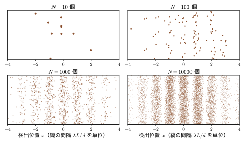
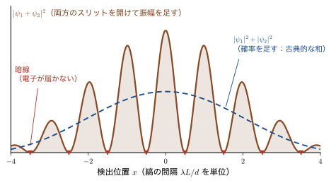
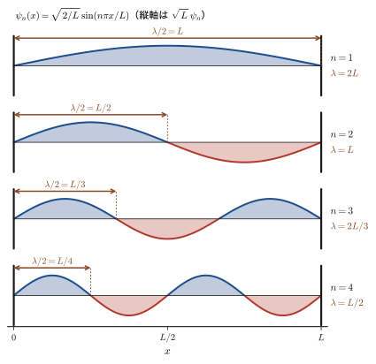
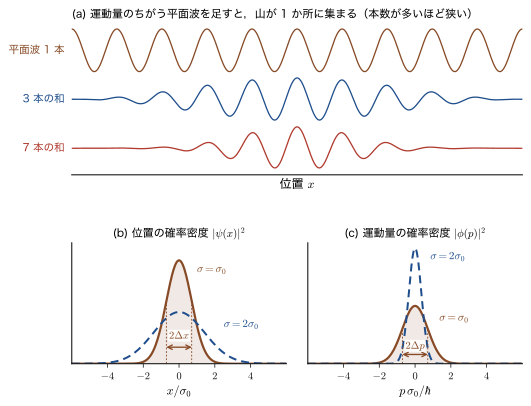
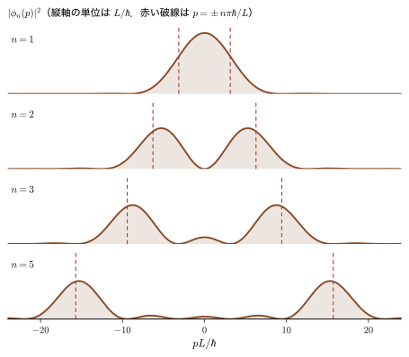
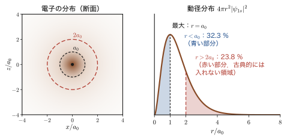
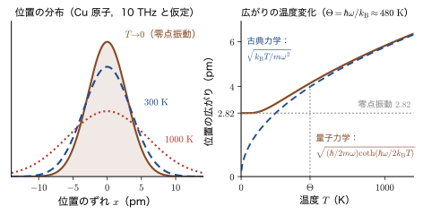
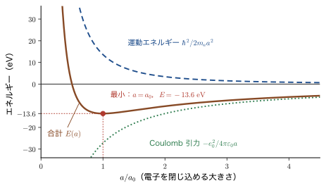

第2章量子力学への素朴な問い — 波長・確率・粒子と波・温度
量子力学を学びはじめると，多くの人が同じところで立ち止まる．「電子は粒子でもあり，波でもある」と言われても，では何が波打っているのだろうか．「波の長さ（波長）は $\lambda=h/p$ で与えられる」と言われても，その $\lambda$ はいったい何の波長なのだろうか．波動関数の絶対値の 2 乗が「粒子の見つかる確率」だというなら，位置の確率があるのだから，運動量の確率もあるのではないか．そもそも「波動性をもつ」とは，どういうことなのか．そして，温度を下げて絶対零度にすれば，電子も止まってしまうのだろうか．こうした素朴な問いは，初学者だけのものではない．量子力学を長く使っている人にとっても，ときどき立ち止まって考え直す価値のある，本質的な問いである．
この章では，Schrödinger（シュレーディンガー）方程式や演算子の理論に入る前に，この四つの問いを正面から取り上げる．方針は 2 つある．第 1 に，数式はなるべく使わない．使うときは，その式が何を言っているのかを必ず言葉で添え，計算の細部（微分方程式の解き方，積分の実行）は後の章にゆずって，そこへのリンクを付ける．どうしても必要な計算は「導出」「数学の道具」の枠にまとめてあるので，最初は読み飛ばして，結果と図だけを追ってもよい．第 2 に，どの問いも「実験事実 → 図 → 考え方 → 式 → 例題」の順に考える．いきなり公理から入るのではなく，まず実験で何が見えるのかを確かめ，古典物理（AD 03「大学基礎物理学」）の直観がどこで破れるのかを，電子・原子・分子の具体的な数値で示す．
取り上げる四つの問いは，次のとおりである．(1) de Broglie（ド・ブロイ）の式の $\lambda$ は何の波長か（2.2 節）．(2) 位置に確率密度があるなら，運動量の確率密度はないのか（2.3 節）．(3) 「粒子性と波動性」とは何か（2.4 節）．(4) 波動関数に温度依存性はあるのか，そして電子はなぜ「広がって」いなければならないのか（2.5 節）．ただし 2.1 節で，これらすべての土台になる実験——電子を 1 個ずつ二重スリットに通す実験——を，先に見ておく．四つの問いの答えは，どれもこの章では「方向」を示すだけにとどめ，式として完全に解くのは第II部以降である．どの問いがどの章で解決されるかは 2.6 節の地図にまとめた．
- 電子を 1 個ずつ二重スリットに通すと，1 個ずつは「点」として検出されるのに，多数を重ねると明暗の縞（干渉縞）ができることを説明し，縞の間隔 $\lambda L/d$ を計算できること
- de Broglie の式 $p=h/\lambda$ の $\lambda$ が，「運動量 $p$ の平面波の波長」であること，箱の中の粒子の定在波は $+p$ と $-p$ の重ね合わせであること，そして調和振動子の基底状態では位置も運動量も 1 つの値に定まらないことを説明できること
- 運動量の確率密度 $\abs{\phi(p)}^2$ が，波動関数の Fourier（フーリエ）変換から得られること，位置の広がりと運動量の広がりが反比例すること（Gauss（ガウス）波束で $\Delta x\,\Delta p=\hbar/2$）を理解すること
- 「波動性をもつ」を 4 つの読み方（物質波・広がり・すり抜け・干渉）に分けて検討し，「検出は粒子的，伝わり方は波的」という見方を身につけること
- 絶対零度に到達できないこと（熱力学第 3 法則）と，$T\to0$ でも電子や原子核が止まらないこと（零点振動・Fermi（フェルミ）運動）を区別し，温度が変えるのは波動関数ではなく占有確率であることを説明できること
- 電子が「広がる」ことが原子の大きさと安定性を決めていることを，原子の大きさの見積り（$a=a_0$，$E=-13.6\ \mathrm{eV}$）で確かめること
もとにしたノート：望月泰英『物理学ノート 量子力学1』 pp. 1–2．
2.1 電子を 1 個ずつ通す二重スリット実験
四つの問いに入る前に，「電子は波でもある」という主張の根拠になった実験を 1 つ，きちんと見ておこう．この章のすべての問いは，結局この実験が突きつける謎の別の顔だからである．実験の内容は簡単で，電子を 1 個ずつ，2 つのスリット（細い隙間）をもつ板に向けて発射し，その向こうに置いた検出面のどこに届くかを記録するというものである．
2.1.1 光の二重スリット — 復習
まず，光の場合を思い出そう．1801 年ごろ，Young（ヤング）は，光を近接した 2 つのスリットに通すと，その向こうのスクリーンに明暗の縞ができることを示し，光が波であることの決定的な証拠とした（AD 03 第16章 16.2）．2 つのスリットの間隔を $d$，スリットからスクリーンまでの距離を $L$（$L\gg d$），光の波長を $\lambda$ とする．スクリーン上の点 $x$（中央を原点とする）に 2 つのスリットから届く光は，経路の長さがおよそ $dx/L$ だけちがう．この経路差が波長の整数倍なら，山と山，谷と谷が重なって強め合い（明線），波長の半整数倍なら山と谷が重なって打ち消し合う（暗線）．こうして，隣り合う明線の間隔は
となる．波長 $\lambda$ が短いほど，縞は細かくなる．一方，2 つのスリットに弾丸（粒子）を撃ち込んだとすると，スリットの向こうの壁には，スリットの真後ろを中心にした 2 本の帯ができるだけで，縞は現れない．したがって，「縞ができるか，できないか」が，波と粒子を見分ける判定基準になる．
2.1.2 電子でやってみる — 実験の歴史
1924 年，de Broglie は，電子のような物質粒子にも，運動量 $p$ に反比例する波長 $\lambda=h/p$ の波が伴うと予想した（$h$ は Planck（プランク）定数，$6.626\times10^{-34}\ \mathrm{J\,s}$．第6章で詳しく扱う）．これが正しければ，電子も回折や干渉をするはずである．ただし，電子の波長はきわめて短い．加速電圧 $50\ \mathrm{kV}$ で加速した電子でも $\lambda\approx5.4\ \mathrm{pm}$（$1\ \mathrm{pm}=10^{-12}\ \mathrm{m}$）で，原子の直径（約 $0.1$〜$0.3\ \mathrm{nm}$）の 20 分の 1 から 50 分の 1 ほどでしかない．波長が短いので，縞の間隔 \eqref{eq:2-fringe} も小さく，実験には技術の進歩が必要だった．表2.1 に，主な実験を年代順に示す．
| 年 | 実験者 | 対象 | 内容 |
|---|---|---|---|
| 1927 | Davisson（デイヴィソン）・Germer（ガーマー） | 電子 | Ni の単結晶の表面で電子が反射されるとき，特定の角度で強く散乱される．結晶による電子の回折（2.4.5 節） |
| 1927 | G. P. Thomson（トムソン） | 電子 | 薄い金属の膜を通り抜けた電子が，同心円状の回折図形をつくる（日本では 1928 年に菊池正士が雲母の薄片で電子回折を観測した） |
| 1955 | Möllenstedt（メレンシュテット）・Düker（デュカー） | 電子 | 電子バイプリズム（下記）による電子の干渉縞の観測．二重スリットと同じはたらきをする電子光学素子（Naturwissenschaften 42, 41） |
| 1961 | Jönsson（イェンソン） | 電子 | 電子線を人工的につくった微細なスリット（二重スリットを含む）に通して干渉縞を観測 |
| 1988 | Zeilinger（ツァイリンガー）ら | 中性子 | 冷中性子の単スリット・二重スリットによる回折・干渉（Rev. Mod. Phys. 60, 1067） |
| 1989 | 外村彰ら（日立製作所） | 電子 | 電子を 1 個ずつ検出しながら干渉縞ができていく様子を観測（Am. J. Phys. 57, 117） |
| 1999 | Arndt（アルント）ら | C60 分子 | 60 個の炭素原子からなる分子の干渉（Nature 401, 680） |
表中の電子バイプリズム（electron biprism）は，中央に張った極細の金属線と，その両側の接地した平板電極からなる装置である．金属線に正の電圧をかけると，線の左右を通る電子の流れが互いに内側へ曲げられて，向こうで重なり合う．光学でいう二重スリットと同じはたらきをするので，電子の干渉実験によく使われる．
2.1.3 電子を 1 個ずつ — 点が縞になる
実験の構成を図2.1 に示す．ここで大事なのは，ビームをきわめて弱くして，電子を 1 個ずつ送ることである．電子が同時に装置の中に 2 個以上いることがないほど弱くすれば，電子どうしが互いに影響し合って縞ができた，という言い訳はできなくなる（例題2.2 で，必要なビームの強さを見積もる）．検出面では，電子は 1 個ずつ，1 つの点として記録される．
結果を図2.2 に示す（実際の実験結果ではなく，同じ状況を確率の分布から乱数で再現した図である）．

この実験結果には，次の 4 つの重要な事実が含まれている．
- 電子は必ず 1 点に届く．薄く広がって検出されることも，半分に割れて 2 か所で検出されることもない．検出面での電子は，質量と電荷をもつ粒子としてふるまう．
- 1 個の電子の到達点は予言できない．最初のうち，点はでたらめに散らばっているように見える．同じ条件で発射しても，電子は毎回ちがう場所に届く．
- たくさん集めると縞になる．数千個から数万個の点が集まると，明暗の縞がはっきりする．電子は 1 個ずつ送っているので，「電子どうしが干渉した」のではない．1 個の電子が，自分自身と干渉しているとしか考えようがない．
- 縞の間隔は式 \eqref{eq:2-fringe} で決まる．しかもそこに現れる波長 $\lambda$ は，de Broglie の式 $\lambda=h/p$ で決まる値と一致する．電子には確かに波長があり，その波長が電子の運動量から決まっている．
問い：電子は，どちらのスリットを通ったのか
電子が「粒」であるなら，2 つのスリットのうち，どちらか一方だけを通るはずである．左のスリットを通った電子は左の帯のあたりに，右を通った電子は右の帯のあたりに届き，縞はできないはずである．ところが，実際には縞ができる．片方のスリットを閉じると縞は消えてしまう（それどころか，暗線だった場所にも電子が届くようになる：例題2.3）．つまり，「もう 1 つの道」が開いていることが，電子がたどる先に影響している．電子は，通れる 2 つの道の「両方」を，何らかの意味でたどっている．この「何らかの意味」を正確に述べるのが量子力学であり，以下では，その第一歩として「確率の足し算ではなく，確率振幅の足し算」という考え方を導入する．
例題2.1 電子二重スリットの縞間隔
加速電圧 $50\ \mathrm{kV}$ で加速した電子を，間隔 $d=1\ \mathrm{\mu m}$ の二重スリットに通し，$L=1.5\ \mathrm{m}$ 先の検出面で観測する．(1) 電子の波長 $\lambda$ と速さ $v$ を求めよ．(2) 縞の間隔を求めよ．(3) 同じ配置で波長 $532\ \mathrm{nm}$ の緑色の光を使ったら，縞の間隔はいくらか．
解答 (1) 電子の運動エネルギーは $K=e_0V=50\ \mathrm{keV}$ である．電子の静止エネルギーは $m_{\mathrm e}c^2=511.0\ \mathrm{keV}$ で，$K$ はその約 10 分の 1 もあるので，相対論的に扱う（第XI部）．相対論では，全エネルギー $K+m_{\mathrm e}c^2$ と運動量 $p$ の関係 $(K+m_{\mathrm e}c^2)^2=(pc)^2+(m_{\mathrm e}c^2)^2$ を整理して，$(pc)^2=K(K+2m_{\mathrm e}c^2)$ が得られる（第XI部）．$K\ll m_{\mathrm e}c^2$ なら $pc\approx\sqrt{2m_{\mathrm e}c^2K}$ で，ふつうの $p=\sqrt{2m_{\mathrm e}K}$ に一致する．数値を入れると $$ (pc)^2=50\times(50+2\times511.0)\ \mathrm{keV}^2=50\times1072.0\ \mathrm{keV}^2=53\,600\ \mathrm{keV}^2\quad\Rightarrow\quad pc=231.5\ \mathrm{keV} $$ である．波長は $\lambda=h/p=hc/(pc)$ で，$hc=1239.84\ \mathrm{eV\,nm}$ より $$ \lambda=\frac{1239.84\ \mathrm{eV\,nm}}{231.5\times10^{3}\ \mathrm{eV}}=5.36\times10^{-3}\ \mathrm{nm}=5.36\ \mathrm{pm} $$ となる．速さは，全エネルギー $E=K+m_{\mathrm e}c^2=561.0\ \mathrm{keV}$ を使って $v/c=pc/E=231.5/561.0=0.413$，すなわち $v=1.24\times10^{8}\ \mathrm{m/s}$（光速の約 41 %）である．なお，相対論を無視すると $p=\sqrt{2m_{\mathrm e}e_0V}$ より $\lambda=h/\sqrt{2m_{\mathrm e}e_0V}$ となる．数値を入れると $h/\sqrt{2m_{\mathrm e}e_0}=1.226\times10^{-9}\ \mathrm{m\,V^{1/2}}$ なので，$\lambda=1.226\ \mathrm{nm}/\sqrt{V/\mathrm{V}}$ と書ける（電圧 $V$ を V の単位で測った数値を代入する）．$V=5\times10^{4}$ を代入すると $5.48\ \mathrm{pm}$ で，約 2 % 大きくなる．
(2) 式 \eqref{eq:2-fringe} より $$ \Delta x=\frac{\lambda L}{d}=\frac{5.36\times10^{-12}\ \mathrm{m}\times1.5\ \mathrm{m}}{1\times10^{-6}\ \mathrm{m}}=8.03\times10^{-6}\ \mathrm{m}=8.03\ \mathrm{\mu m} $$ である．髪の毛の太さ（約 $0.1\ \mathrm{mm}$）の 10 分の 1 以下で，肉眼では見えないが，電子顕微鏡の技術で拡大すれば観測できる細かさである．
(3) 光の場合，同じ式で $\Delta x=532\times10^{-9}\ \mathrm{m}\times1.5\ \mathrm{m}/(1\times10^{-6}\ \mathrm{m})=0.798\ \mathrm{m}$ となる．電子の縞は光の縞の約 10 万分の 1 の細かさである．これは，波長の比 $532\ \mathrm{nm}/5.36\ \mathrm{pm}\approx9.9\times10^{4}$ がそのまま縞の間隔の比になっているからである．同じ幾何学的配置では光の縞は非現実的に大きくなるので，実際の光の実験ではもっと狭いスリットを用いるか，スクリーンを近づける．
例題2.2 点の蓄積と縞の見え方，そして「1 個ずつ」の意味
(1) 縞の 1 本の明線に相当する幅（ビン）に平均 $n$ 個の電子が入るとする．電子の到達は独立な確率的事象なので，ビンに入る個数のばらつき（標準偏差）は約 $\sqrt{n}$ である．相対的なゆらぎ $1/\sqrt{n}$ が $10\ \%$ 以下なら縞がはっきり見えるとして，$100$ 本のビンで縞を見るには合計何個の電子が必要か．(2) ビームの強さが毎秒 $10^{3}$ 個，および毎秒 $10$ 個のとき，それぞれ何秒（何分）かかるか．(3) 例題2.1 の電子（$v=1.24\times10^{8}\ \mathrm{m/s}$）を毎秒 $10^{3}$ 個の割合で発射すると，電子どうしの平均の間隔は何 m か．装置の長さ $1.5\ \mathrm{m}$ の中に同時に何個の電子がいるか．
解答 (1) 相対ゆらぎ $1/\sqrt{n}$ は，$n=10$ で $1/\sqrt{10}=0.32$（32 %），$n=100$ で $1/\sqrt{100}=0.10$（10 %）である．10 % 以下にするには $n\ge100$ が必要で，ビンが 100 本なら合計 $100\times100=10^{4}$ 個の電子が要る．これが，図2.2 で $N=10^{4}$ のパネルにはっきりした縞が見え，$N=10$，$100$ ではでたらめに見える理由である．
(2) 毎秒 $10^{3}$ 個なら $10^{4}/10^{3}=10\ \mathrm{s}$．毎秒 $10$ 個なら $10^{4}/10=1000\ \mathrm{s}\approx17\ \mathrm{min}$ である．
(3) 電子は毎秒 $R=10^{3}$ 個の割合で，速さ $v$ で飛んでくる．隣り合う 2 個の電子の間隔は，時間間隔 $1/R$ の間に飛ぶ距離 $v/R$ であるから $$ \frac{v}{R}=\frac{1.24\times10^{8}\ \mathrm{m/s}}{10^{3}\ \mathrm{s^{-1}}}=1.24\times10^{5}\ \mathrm{m}=124\ \mathrm{km} $$ となる．装置の長さ $1.5\ \mathrm{m}$ の中にいる電子の個数は，$1.5\ \mathrm{m}\div(1.24\times10^{5}\ \mathrm{m})=1.2\times10^{-5}$ 個である．すなわち，装置の中に電子が 1 個いる確率が $10^{-5}$ 程度で，2 個同時にいる確率はさらにその 10 万分の 1 程度でしかない．電子どうしが装置内で出会う可能性は無視でき，縞は「1 個の電子が自分自身と干渉する」ことでできていると結論できる．
2.1.4 確率振幅の足し算
ここまでの実験事実を，最小限の式で表そう．片方のスリット（スリット 1）だけを開けたとき，検出面上の位置 $x$ に電子が届く確率の密度を $\abs{\psi_1(x)}^2$ と書く．ここで $\psi_1(x)$ は，スリット 1 を通った電子の「波」であり，一般に複素数の値をとる（確率振幅とも，波動関数とも呼ぶ）．確率は，複素数の大きさ（絶対値）の 2 乗として得られる．スリット 2 だけを開けたときも同様に $\abs{\psi_2(x)}^2$ である．
両方のスリットを開けたらどうなるか．古典的な弾丸なら，確率が足し算になる：$P=\abs{\psi_1}^2+\abs{\psi_2}^2$．しかし電子では，足し算になるのは確率ではなく振幅である：
式 \eqref{eq:2-amp} の最後の項が干渉項（interference term）である（$\Real$ は実部，$\psi_1^{*}$ は $\psi_1$ の複素共役）．この項は正にも負にもなり，$\psi_1$ と $\psi_2$ が同じ位相なら強め合い，逆の位相なら打ち消し合う．波の重ね合わせ（AD 03 第11章 11.6）と同じ数学である．干渉項が消えるとき（$\Real(\psi_1^*\psi_2)=0$ のとき）にだけ，古典的な弾丸の和になる．図2.3 に両者を比べる．

例題2.3 確率振幅の足し算と暗線
2 つのスリットからの振幅が，検出面上のある点で同じ大きさ $\psi_0$（正の実数）で，位相が $\delta$ だけずれているとして，$\psi_1=\psi_0$，$\psi_2=\psi_0e^{i\delta}$ とおく．(1) 両方のスリットを開けたときの確率密度 $P$ を求めよ．(2) $\delta=0$，$\delta=\pi$ のときの値を求めよ．(3) $\delta$ について $0$ から $2\pi$ まで平均した値は，古典的な和 $\abs{\psi_1}^2+\abs{\psi_2}^2$ と等しいことを示せ．(4) 片方のスリットを閉じると，暗線の位置にも電子が届く．なぜ「電子が届く場所が増える」のか，考えよ．
解答 (1) 式 \eqref{eq:2-amp} より $P=\abs{\psi_0+\psi_0e^{i\delta}}^2=\psi_0^2\,\abs{1+e^{i\delta}}^2$ である．$\abs{z}^2=zz^*$ を使うと $$ \abs{1+e^{i\delta}}^2=(1+e^{i\delta})(1+e^{-i\delta})=2+e^{i\delta}+e^{-i\delta}=2+2\cos\delta=4\cos^2\frac{\delta}{2} $$ （最後で，倍角の公式 $1+\cos\delta=2\cos^2(\delta/2)$ を使った）．したがって $P=4\psi_0^2\cos^2(\delta/2)$ である．
(2) $\delta=0$（同位相）では $P=4\psi_0^2$．これは，片方のスリットだけのときの $\psi_0^2$ の 4 倍で，古典的な和 $2\psi_0^2$ の 2 倍である．$\delta=\pi$（逆位相）では $\cos(\pi/2)=0$ より $P=0$ で，電子は全く届かない（暗線）．
(3) $\cos^2(\delta/2)=(1+\cos\delta)/2$ なので，$0\le\delta\le2\pi$ での平均は $\dfrac{1}{2\pi}\displaystyle\int_0^{2\pi}4\psi_0^2\cdot\frac{1+\cos\delta}{2}\dd\delta=2\psi_0^2\cdot\frac{1}{2\pi}\Bigl[\delta+\sin\delta\Bigr]_0^{2\pi}=2\psi_0^2$ となる．これは古典的な和 $\psi_0^2+\psi_0^2=2\psi_0^2$ に等しい．干渉は，電子を増やしたり減らしたりするのではなく，同じ数の電子を，届く場所と届かない場所に再配分している．
(4) 片方（たとえばスリット 2）を閉じると $P=\abs{\psi_1}^2=\psi_0^2$ となり，(2) の暗線の位置（$\delta=\pi$）でも $P=\psi_0^2\ne0$ である．「道を 1 つ増やしたら，届かない場所ができる」という，粒子の直観では説明できない現象である．振幅の足し算で考えると，2 つの道からの振幅が逆位相で打ち消し合っただけだと理解できる．
注意：通った道を調べると，縞は消える
電子がどちらのスリットを通ったかを調べるために，スリットの近くに検出器を置いて「電子が通った」という記録が残るようにすると，検出面の縞は消えて，図2.3 の青い破線（古典的な和）になる．通り道を記録できる状況にした時点で，干渉項が消えるのである．逆にいえば，通り道の情報がどこにも残らない限り，電子は「通りうる 2 つの道」の両方が結果に寄与する．この事実は，測定とは何かという問題に直結し，第7章と第8章で詳しく扱う．Feynman（ファインマン）は，二重スリット実験を，量子力学のあらゆる神秘の核心が詰まった実験と述べている（The Feynman Lectures on Physics, Vol. III, 第 1 章）．
ここで，波と粒子についての重要な指摘をしておく．同じ結果は，電子に限らない．光でも，光子を 1 個ずつ検出しながら二重スリット実験を行うと，1 個ずつは点として検出され，多数が集まると縞になる．原子・分子でも同様で，表2.1 の C60 分子（質量は炭素原子 60 個分で $720\ \mathrm{u}$）の場合，速さ $200\ \mathrm{m/s}$ で $\lambda=h/(mv)=2.77\ \mathrm{pm}$ である．分子の直径（約 $0.7\ \mathrm{nm}$）の 250 分の 1 の波長でも干渉縞が観測される．私たちが日常出会う物体（ボールや砂粒）で干渉が見えないのは，波長が短すぎるからにすぎない（第1章）．
2.1.5 材料科学とのつながり
応用：回折を使って材料の構造を調べる
電子が波であることは，材料の研究にそのまま使われている．透過電子顕微鏡（TEM）の制限視野電子回折は，$\lambda\approx2.5\ \mathrm{pm}$（$200\ \mathrm{kV}$）程度の電子線を薄い試料に当てて，結晶の格子面間隔や対称性を調べる．表面の原子配列は，数十〜百数十 $\mathrm{eV}$ の電子（波長は約 $0.1$〜$0.4\ \mathrm{nm}$）を使う低速電子回折（LEED）や，高エネルギーの電子を浅い角度で当てる反射高速電子回折（RHEED）で調べる．LEED は，2.4.5 節の Davisson–Germer の実験そのものの現代版である．また，中性子は磁気モーメントをもつので，中性子回折によって磁性体の磁気構造や，X 線では見えにくい水素原子の位置がわかる（2.4 節の例題2.12，詳しくは第6章 6.6）．これらは，X 線回折（AD 03 第16章 16.7）と同じく，多数の原子で散乱された波の干渉を見ているのであって，本質は二重スリットの縞と同じである．
関連シミュレーター：スリットを通る粒子（単スリット・二重スリット）．運動量 $p=mv$ の粒子を 1 個ずつ飛ばして，到達点の分布を見ることができる．波長，スリット間隔，スリット幅を変えて，式 \eqref{eq:2-fringe} の関係を確かめてみよう．二重スリットの強度分布を式で導くのは第7章である．
2.2 問い 1 — de Broglie の式の $\lambda$ は何の波長か
2.1 節の実験では，縞の間隔から電子の波長 $\lambda$ を読み取ることができ，その値は de Broglie の式 $\lambda=h/p$ と一致した．しかし，よく考えると不思議である．この $\lambda$ は，いったい「何の」波長なのだろうか．（この節の「導出」の枠は，式を 1 行ずつ追いたい人のためのものである．読み飛ばしても，結果を述べた本文と図で筋を追える．）
2.2.1 光子の場合と粒子の場合
光子の場合は，はっきりしている．光は電磁波であり，$\lambda$ は電磁場（電場と磁場）の振動の波長である．回折格子や二重スリットで実際に測ることができる．光子 1 個がもつエネルギーは $E=h\nu=hc/\lambda$，運動量の大きさは $p=h/\lambda$ である（第4章，第6章）．
では，電子のような質量のある粒子の場合はどうか．de Broglie は，光子で成り立つ $p=h/\lambda$ の関係が，粒子でも同じように成り立つと考えた．
法則2.1 de Broglie の関係
運動量の大きさが $p$ の粒子には，波長
\begin{equation} \lambda=\frac{h}{p} \label{eq:2-debroglie} \end{equation}の波が伴う．ここで $h$ は Planck 定数で，$h=6.626\times10^{-34}\ \mathrm{J\,s}$ である（第3章で詳しく扱う）．波数 $k$ を，単位長さあたりの位相の進み（単位は $\mathrm{rad/m}$）として $k=2\pi/\lambda$ と定めると（長さ $2\pi$ の中に波が何個入るか，と読んでもよい），同じ関係は $p=\hbar k$ とも書ける．ここで $\hbar$（エイチバー）は $h$ を $2\pi$ で割った定数，$\hbar=h/2\pi=1.054\,57\times10^{-34}\ \mathrm{J\,s}$ である．運動量 $p$ で一様に動く粒子に対応する波は，平面波 $e^{i(kx-\omega t)}$（$k=p/\hbar$）である．
この関係が実験と合うことは，2.1.3 節の事実 (4) で見た（Davisson–Germer の実験による定量的な確認は 2.4.5 節の例題2.11 で行う）．しかし，式 \eqref{eq:2-debroglie} が「何の波長か」は，実はそれほど明らかではない．粒子の波とは，電磁波のように「何かの物理量が振動している」波ではなく，2.1.4 節で導入した波動関数 $\psi$ である．では，$\lambda$ は波動関数の波長なのか．この問いを，もっとも簡単な例——箱の中の粒子——で具体的に確かめよう．
2.2.2 箱の中の粒子で確かめる
長さ $L$ の 1 次元の箱（両端が壁で，粒子は壁の外に出られない領域）に閉じ込められた質量 $m$ の粒子を考える．座標 $x$ を，箱の左端を $0$，右端を $L$ ととる．第10章 10.1 で Schrödinger 方程式から導くように，エネルギーが一定の状態（定常状態）の波動関数は
\begin{equation} \psi_n(x)=\sqrt{\frac{2}{L}}\,\sin\frac{n\pi x}{L}\qquad(0\le x\le L,\ \ n=1,2,3,\dots) \label{eq:2-box} \end{equation}で与えられる（箱の外では $\psi_n=0$）．係数 $\sqrt{2/L}$ は，粒子が箱のどこかにいる確率を 1 にするための規格化定数で，整数 $n$ は状態の番号である（箱の中の粒子は $n=1$ から数える）．図2.4 に $n=1,\dots,4$ の場合を示す．

グラフから，波動関数 $\psi_n$ の波長を読み取ろう．壁で $\psi_n=0$ になる必要があるので，半波長が整数個，箱に収まらなければならない．$n$ 個の半波長がちょうど長さ $L$ に収まるので，$n\times\dfrac{\lambda}{2}=L$ より
\begin{equation} \lambda=\frac{2L}{n} \label{eq:2-lambda-box} \end{equation}である．これは，ギターの弦の固有振動（AD 03 第11章 11.7）とまったく同じである．
次に，この状態の運動量を求めよう．量子力学では，運動量は演算子 $\hat{p}=-i\hbar\dfrac{\dd}{\dd x}$ で表される（第9章）．「運動量が $p$ に確定した状態」とは，$\hat{p}$ を作用させたとき，もとの関数の定数倍 $p$ 倍になる関数のことである（固有関数，$p$ が固有値）．たとえば平面波 $e^{ikx}$ では，$\hat{p}\,e^{ikx}=-i\hbar\cdot ik\,e^{ikx}=\hbar k\,e^{ikx}$ となって，運動量 $p=\hbar k$ の固有関数である．では $\psi_n$ に $\hat{p}$ を作用させるとどうなるか．
導出（読み飛ばしてよい）：$\psi_n$ の運動量（2 乗）
[i] $\hat{p}$ を 1 回作用させる．$\sin$ の微分は $\cos$ なので，
$$ \hat{p}\,\psi_n=-i\hbar\,\diff{\psi_n}{x}=-i\hbar\sqrt{\frac{2}{L}}\,\frac{n\pi}{L}\cos\frac{n\pi x}{L} $$となる．これは $\cos$ であって，もとの $\sin$ の定数倍ではない．したがって，$\psi_n$ は運動量演算子の固有関数ではない．（$\psi_n$ は「運動量がただ 1 つの値に確定した状態」ではない．）
[ii] $\hat{p}$ を 2 回作用させる．そこで，$\hat{p}$ を 2 回作用させて $\hat{p}^2=-\hbar^2\dfrac{\dd^2}{\dd x^2}$ を作ると，$\sin$ を 2 回微分すると $-\left(\dfrac{n\pi}{L}\right)^2\sin$ に戻るので，
$$ \hat{p}^2\psi_n=-\hbar^2\diff{^2\psi_n}{x^2}=-\hbar^2\left(-\frac{n^2\pi^2}{L^2}\right)\psi_n=\hbar^2\left(\frac{n\pi}{L}\right)^2\psi_n $$となり，箱の内側では，もとの関数の定数倍に戻る．すなわち，箱の内側での運動量の 2 乗の値が求まる．$\hat{p}^2\psi=p^2\psi$ とおくと
$$ p^2=\hbar^2\left(\frac{n\pi}{L}\right)^2=\left(\frac{h}{2\pi}\right)^2\frac{n^2\pi^2}{L^2}=\frac{h^2}{4L^2}\,n^2\qquad\therefore\ \ p=\frac{h}{2L}\,n $$である（ここで $p$ は運動量の大きさの目安で，符号は次項で考える）．
（導出終わり）
この結果を，式 \eqref{eq:2-lambda-box} の波長と比べる．$\lambda=2L/n$ より $h/\lambda=hn/(2L)$ であり，これは上で求めた $p=hn/(2L)$ とちょうど一致する．つまり
\begin{equation} p=\frac{hn}{2L}=\frac{h}{\lambda} \label{eq:2-pbox} \end{equation}が成り立つ．箱の中の粒子でも，de Broglie の関係 $p=h/\lambda$ は，波動関数の波長 $\lambda$（式 \eqref{eq:2-lambda-box}）を使って満たされている．さらに，$E=p^2/2m$ に代入すると $E_n=h^2n^2/(8mL^2)$ となり，これは第10章で Schrödinger 方程式から導くエネルギーと一致する．
問い：では，$\lambda$ は波動関数の波長なのか
式 \eqref{eq:2-pbox} を見ると，「de Broglie の式の $\lambda$ は，波動関数のグラフに現れる波の波長である」と結論したくなる．しかし，ここには 2 つの疑問が残る．第 1 に，$\psi_n$ は運動量の固有関数ではないのに，どうして「運動量 $p=h/\lambda$」と言えるのか（$\hat{p}\,\psi_n$ は $\psi_n$ の定数倍にならなかった）．第 2 に，波が全くない波動関数——たとえば，次に見る調和振動子の基底状態——では，$\lambda$ も $p$ も決められないのではないか．順に答えていこう．
2.2.3 答え：定在波は，反対向きの 2 つの進行波の重ね合わせ
$\sin$ は，Euler（オイラー）の公式から，$\sin kx=\dfrac{e^{ikx}-e^{-ikx}}{2i}$ と書ける．$k=n\pi/L$ とおくと，式 \eqref{eq:2-box} は
\begin{equation} \psi_n(x)=\sqrt{\frac{2}{L}}\,\frac{e^{ikx}-e^{-ikx}}{2i}=\frac{1}{i\sqrt{2L}}\Bigl(e^{ikx}-e^{-ikx}\Bigr),\qquad k=\frac{n\pi}{L} \label{eq:2-two-waves} \end{equation}となる．$e^{ikx}$ は運動量 $+\hbar k$ の平面波（右向きの進行波），$e^{-ikx}$ は運動量 $-\hbar k$ の平面波（左向きの進行波）である．したがって，箱の中の粒子の状態 $\psi_n$ は，「右向きに運動量 $\hbar k$ で進む波」と「左向きに運動量 $\hbar k$ で進む波」を同じ大きさで重ね合わせた定在波である．これは，壁で反射を繰り返す粒子が「右へ行ったり左へ行ったり」していることの波動関数による表現にほかならない．2 つの波の大きさが等しいので，運動量を測ると，$+\hbar k$ の近くの値と $-\hbar k$ の近くの値が同じ確率で現れる（$n$ が大きいほど $\pm\hbar k$ の近くに集中する．正確なようすは次節の図2.6 で見る）．どちらの成分も，$\lambda=2\pi/k$，$\hbar k=h/\lambda$ である．
以下では，運動量を同じ状態で何度も測ったときの平均値を期待値といい，$\expval{p}=\displaystyle\int\psi^*\,(\hat{p}\psi)\dd x$ と書く．$\expval{p^2}$ は $p^2$ の平均，運動量の広がり $\Delta p$ は，平均からのずれの 2 乗の平均の平方根 $\Delta p=\sqrt{\expval{p^2}-\expval{p}^2}$（標準偏差）である．位置の広がり $\Delta x$ も同じように定める（詳しくは第8章）．
このことから，次のことがわかる．
- de Broglie の式の $\lambda$ は，その運動量 $p$ をもつ平面波の波長である．波動関数の波長はこの意味で理解する．$\psi_n$ の波長 $2L/n$ は，$\psi_n$ を構成する 2 つの進行波（$\pm p$）のどちらの波長にも等しい．
- 定在波 $\psi_n$ は，運動量が $+p$ 側か $-p$ 側かはわからないが，その大きさの目安 $\sqrt{\expval{p^2}}=h/\lambda$ を決めている．箱の内側では，$\hat{p}\,\psi_n$ は $\psi_n$ の定数倍にならないが，$\hat{p}^2\psi_n=(\hbar k)^2\psi_n$ は成り立つ．これが，上の導出の数学的な意味である．
- 運動量の平均値（期待値）は，右向きと左向きが打ち消し合って $\expval{p}=0$ になる（例題2.5）．一方，運動量の 2 乗の平均値の平方根は $\sqrt{\expval{p^2}}=n\pi\hbar/L=h/\lambda$ で，これは $\hbar k$ そのものである．
注意：「運動量がちょうど $\pm\hbar k$」ではない
ここまでの説明は，絵としてはよいが，厳密には少し粗い．式 \eqref{eq:2-two-waves} の右辺は，箱の内側（$0\lt x\lt L$）でだけ $\psi_n$ に等しく，箱の外では $\psi_n=0$ である．すなわち $\psi_n$ は，空間全体に広がった 2 本の平面波ではなく，箱の内側だけで切り取った波である．波を「切り取る」と，運動量には少し広がりが生じる．実際，次節（2.3 節）で見るように，運動量の確率分布は鋭い 2 本の線ではなく，ある幅をもつ．$n$ が大きいと分布は $\pm\hbar k$ の近くに 2 つの山をもち，波が多く含まれるほど山が鋭くなって，上の絵が正確になる（$n=1$ だけは，山が $p=0$ に 1 つある）．また，$\hat{p}^2\psi_n=(\hbar k)^2\psi_n$ が成り立つのも箱の内側だけである．それでも，運動量の 2 乗の平均値 $\expval{p^2}=(n\pi\hbar/L)^2$ は，どの $n$ でも厳密に成り立つ．本書ではこのため，「運動量の値」ではなく「運動量の 2 乗平均の平方根」$\sqrt{\expval{p^2}}$ と表現する．
例題2.4 箱の中の電子の波長・運動量・エネルギー
長さ $L=0.5\ \mathrm{nm}$ の 1 次元の箱に閉じ込められた電子について，$n=1,2$ の波長 $\lambda$，運動量の大きさ $p$，エネルギー $E$ を求めよ．
解答 $n=1$：式 \eqref{eq:2-lambda-box} より $\lambda=2L/1=2\times0.5\ \mathrm{nm}=1.0\ \mathrm{nm}$．式 \eqref{eq:2-pbox} より $$ p=\frac{h}{2L}=\frac{6.626\times10^{-34}\ \mathrm{J\,s}}{2\times0.5\times10^{-9}\ \mathrm{m}}=6.63\times10^{-25}\ \mathrm{kg\,m/s} $$ である（$\mathrm{J\,s}=\mathrm{kg\,m^2/s}$ に注意）．エネルギーは $E_1=p^2/2m_{\mathrm e}$ より $$ E_1=\frac{(6.626\times10^{-25})^2}{2\times9.109\times10^{-31}}\ \mathrm{J}=2.410\times10^{-19}\ \mathrm{J}=\frac{2.410\times10^{-19}}{1.602\times10^{-19}}\ \mathrm{eV}=1.504\ \mathrm{eV} $$ である．速さに直すと $v=p/m_{\mathrm e}=7.27\times10^{5}\ \mathrm{m/s}$（光速の 0.24 %）となり，非相対論で十分である．
$n=2$：$\lambda=2L/2=0.5\ \mathrm{nm}$，$p=hn/(2L)=h/L=1.33\times10^{-24}\ \mathrm{kg\,m/s}$（$n=1$ の 2 倍），$E_2=p^2/2m_{\mathrm e}=4E_1=6.02\ \mathrm{eV}$ である．波長が半分になると運動量は 2 倍，エネルギーは 4 倍になる．$1\ \mathrm{nm}$ 程度の箱では，エネルギー間隔が $\mathrm{eV}$ の程度になる．これが，原子や分子のエネルギーがとびとびの値をとり，光の色が決まる理由の出発点である（第10章 10.8）．
例題2.5 発展：運動量の 2 乗の期待値と平均値
式 \eqref{eq:2-box} の $\psi_n$ について，(1) $\hat{p}^2\psi_n=(n\pi\hbar/L)^2\psi_n$（箱の内側）を確かめよ．(2) 運動量の期待値 $\expval{p}=\displaystyle\int_0^L\psi_n\,\hat{p}\,\psi_n\dd x$ を求めよ．(3) $\expval{p^2}=\displaystyle\int_0^L\psi_n\,\hat{p}^2\psi_n\dd x$ を求め，$\sqrt{\expval{p^2}}=h/\lambda$ を示せ．（$\psi_n$ は実数なので複素共役は不要である．）
解答 (1) 導出のとおり．$\hat{p}^2\psi_n=-\hbar^2\psi_n''=\hbar^2(n\pi/L)^2\psi_n$．
(2) $\hat{p}\,\psi_n=-i\hbar\sqrt{2/L}\,(n\pi/L)\cos(n\pi x/L)$ を使い，$\sin\theta\cos\theta=\tfrac12\sin2\theta$ を用いて $$ \expval{p}=-i\hbar\frac{2}{L}\frac{n\pi}{L}\int_0^L\sin\frac{n\pi x}{L}\cos\frac{n\pi x}{L}\dd x =-i\hbar\frac{n\pi}{L^2}\int_0^L\sin\frac{2n\pi x}{L}\dd x =-i\hbar\frac{n\pi}{L^2}\left[-\frac{L}{2n\pi}\cos\frac{2n\pi x}{L}\right]_0^L $$ となる．$\cos(2n\pi)=\cos0=1$ なので括弧の中は $0$，したがって $\expval{p}=0$ である．右向きと左向きの運動量が打ち消し合っている．
(3) (1) より $\hat{p}^2\psi_n=(n\pi\hbar/L)^2\psi_n$ なので，$\expval{p^2}=(n\pi\hbar/L)^2\displaystyle\int_0^L\psi_n^2\dd x=(n\pi\hbar/L)^2$（規格化条件 $\int\psi_n^2\dd x=1$）．したがって $\sqrt{\expval{p^2}}=n\pi\hbar/L$．一方，$h/\lambda=hn/(2L)=2\pi\hbar n/(2L)=n\pi\hbar/L$ であるから，$\sqrt{\expval{p^2}}=h/\lambda$ が成り立つ．
2.2.4 調和振動子の基底状態 — 位置も運動量も 1 つに定まらない
次に，「波の全くない」波動関数の例を見よう．ばね定数 $m\omega^2$ のばねにつながれた質量 $m$ の粒子（調和振動子，$\omega$ は角振動数）のエネルギーがもっとも低い状態（基底状態）の波動関数は，第13章で導くように
\begin{equation} \psi_0(x)=\left(\frac{m\omega}{\pi\hbar}\right)^{1/4}\exp\left(-\frac{m\omega}{2\hbar}x^2\right) \label{eq:2-ho0} \end{equation}である（振動子は状態を $n=0,1,2,\dots$ と数え，$\psi_0$ が基底状態である．箱の中の粒子の $n=1$ から始まる番号とは異なることに注意）．これは，原点でなだらかな山をもつ釣鐘型（Gauss 関数）で，波打っていない．この形の Gauss 関数の位置分布と運動量分布を，次節の図2.5 に示す（基底状態は $\sigma=\sqrt{\hbar/m\omega}$ の場合にあたる）．
この状態では，「位置」も「運動量」も 1 つの値に定まらない．位置は，山の幅にわたる広がりをもち，運動量は，波が打っていない（波長が定義できない）ので，$p=h/\lambda$ のような値が決まらない．ここに，次の疑問が出てくる：「量子数 $n$（この場合 $n=0$）を指定して状態を決めたのに，なぜ位置か運動量のどちらかは決まらないのか」．箱の中の粒子では，$n$ を決めると $p$ の大きさ $h/\lambda$ が決まったのだから，調和振動子でも，$n$ を決めればどちらか（$x$ か $p$）が決まりそうなものである．
考察：$n$ を指定すると何が決まるのか
量子数 $n$ が指定するのは，エネルギー $E_n$ である．位置や運動量ではない．全エネルギーを表す演算子をハミルトニアン $\hat{H}$ といい（運動エネルギーの演算子 $\hat{p}^2/2m$ と位置エネルギーの和 $\hat{H}=\hat{p}^2/2m+V(\hat{x})$），$E_n$ はその固有値にあたる．箱の中の粒子では，箱の内側の $\hat{H}=\hat{p}^2/2m$ に運動量の 2 乗しか含まれないので，エネルギーが決まると運動量の 2 乗が決まった（式 \eqref{eq:2-pbox}）．しかし調和振動子の $\hat{H}=\hat{p}^2/2m+\tfrac12m\omega^2\hat{x}^2$ には，運動量と位置が両方含まれている．エネルギー $E_n$ が決まっても，運動エネルギーとポテンシャルエネルギーの間の配分がゆらぐので，運動量も位置も 1 つの値には決まらない．数学的にいうと，$\hat{H}$ は $\hat{x}$ とも $\hat{p}$ とも交換しない．これは，演算の順序を入れ替えると結果が変わる（$\hat{H}\hat{x}\ne\hat{x}\hat{H}$，$\hat{H}\hat{p}\ne\hat{p}\hat{H}$）という意味である．したがって，$\hat{H}$ の固有状態が $\hat{x}$ や $\hat{p}$ の固有状態になる必然性はない（第8章）．
これは古典力学と対照的である．古典的な振動子は，エネルギーが決まれば，位置と運動量が時間とともに楕円軌道を描いて変化し，どの時刻でも位置と運動量が両方とも決まっている．量子力学では，エネルギーが決まった定常状態では，位置と運動量の両方が確率分布をもつ．
広がりの大きさを具体的に求めよう．
導出（読み飛ばしてよい）：調和振動子の基底状態の $\Delta x$，$\Delta p$
式 \eqref{eq:2-ho0} より，確率密度は $\abs{\psi_0}^2=\sqrt{\dfrac{m\omega}{\pi\hbar}}\,\exp\left(-\dfrac{m\omega}{\hbar}x^2\right)$ である．これは，$\exp(-x^2/2s^2)$ の形（Gauss 分布，$s^2$ は分散）で $s^2=\dfrac{\hbar}{2m\omega}$ とおいたものに等しい．したがって $\expval{x}=0$，$\expval{x^2}=s^2=\dfrac{\hbar}{2m\omega}$ で，位置の標準偏差（広がり）は
$$ \Delta x=\sqrt{\expval{x^2}-\expval{x}^2}=\sqrt{\frac{\hbar}{2m\omega}} $$である．次に運動量．$\psi_0$ を 1 回微分すると $\psi_0'=-\dfrac{m\omega}{\hbar}\,x\,\psi_0$，もう 1 回微分すると（積の微分）
$$ \psi_0''=-\frac{m\omega}{\hbar}\,\psi_0-\frac{m\omega}{\hbar}\,x\,\psi_0'=\left[-\frac{m\omega}{\hbar}+\left(\frac{m\omega}{\hbar}\right)^2x^2\right]\psi_0 $$となる．したがって
$$ \expval{p^2}=\int\psi_0\bigl(-\hbar^2\psi_0''\bigr)\dd x=\hbar m\omega-\hbar^2\left(\frac{m\omega}{\hbar}\right)^2\expval{x^2}=\hbar m\omega-\hbar^2\frac{m^2\omega^2}{\hbar^2}\cdot\frac{\hbar}{2m\omega}=\hbar m\omega-\frac{\hbar m\omega}{2}=\frac{m\hbar\omega}{2} $$である（規格化条件 $\int\psi_0^2\dd x=1$ を使った）．また，$\psi_0$ は実数の偶関数なので $\expval{p}=-i\hbar\displaystyle\int\psi_0\psi_0'\dd x=-\dfrac{i\hbar}{2}\Bigl[\psi_0^2\Bigr]_{-\infty}^{\infty}=0$ である．よって $\Delta p=\sqrt{\expval{p^2}}=\sqrt{m\hbar\omega/2}$．積は
$$ \Delta x\,\Delta p=\sqrt{\frac{\hbar}{2m\omega}}\sqrt{\frac{m\hbar\omega}{2}}=\frac{\hbar}{2} $$である．
（導出終わり）
この状態は，位置と運動量の不確定性の積がとりうる最小値 $\hbar/2$ になっている（第8章で証明する不確定性原理）．さらに，運動エネルギーとポテンシャルエネルギーの期待値は，$\expval{T}=\expval{p^2}/2m=\hbar\omega/4$，$\expval{V}=\tfrac12m\omega^2\expval{x^2}=\hbar\omega/4$ で，ちょうど等しい．全エネルギー $\hbar\omega/2$ の半分ずつである．古典的な振動子なら，エネルギーがもっとも低い状態は「原点で静止した状態」（$E=0$）だが，量子力学では位置を $\Delta x$ に閉じ込めると運動量が $\Delta p$ に広がり，エネルギーを $\hbar\omega/2$ より下げられない．これを零点エネルギーという．
例題2.6 Cu 原子の零点振動
金属結晶の格子振動の振動数は $\mathrm{THz}$（$=10^{12}\ \mathrm{Hz}$）の程度である（Cu では最大で約 $7\ \mathrm{THz}$）．ここでは見積りのため，実際の Cu よりやや高い $\nu=10\ \mathrm{THz}$ をもつ仮想的な振動子として，質量 $63.55\ \mathrm{u}$ の Cu 原子 1 個が調和振動しているとみなして，基底状態の $\hbar\omega$，零点エネルギー，位置の広がり $\Delta x$，運動量の広がり $\Delta p$ を求めよ．Cu の最近接原子間距離（$256\ \mathrm{pm}$）と比べよ．
解答 $\omega=2\pi\nu=6.283\times10^{13}\ \mathrm{s^{-1}}$，$\hbar=6.582\times10^{-16}\ \mathrm{eV\,s}$ より $\hbar\omega=6.582\times10^{-16}\times6.283\times10^{13}\ \mathrm{eV}=4.136\times10^{-2}\ \mathrm{eV}=41.36\ \mathrm{meV}$．零点エネルギーは $\hbar\omega/2=20.7\ \mathrm{meV}$ である．原子の質量は $m=63.55\times1.6605\times10^{-27}\ \mathrm{kg}=1.055\times10^{-25}\ \mathrm{kg}$ で， $$ \Delta x=\sqrt{\frac{\hbar}{2m\omega}}=\sqrt{\frac{1.0546\times10^{-34}}{2\times1.055\times10^{-25}\times6.283\times10^{13}}}\ \mathrm{m}=\sqrt{7.95\times10^{-24}}\ \mathrm{m}=2.82\times10^{-12}\ \mathrm{m}=2.82\ \mathrm{pm} $$ となる．これは最近接距離 $256\ \mathrm{pm}$ の $1.1\ \%$ である．運動量の広がりは $\Delta p=\sqrt{m\hbar\omega/2}=1.87\times10^{-23}\ \mathrm{kg\,m/s}$ で，$\Delta x\,\Delta p=2.82\times10^{-12}\times1.87\times10^{-23}=5.27\times10^{-35}\ \mathrm{J\,s}=\hbar/2$（$\hbar/2=5.27\times10^{-35}\ \mathrm{J\,s}$）と一致する．この仮想的な振動子では，絶対零度に近い温度でも約 $3\ \mathrm{pm}$ の広がりが残る．実際の Cu でも，格子振動の零点振動による原子の広がりは数 $\mathrm{pm}$ の程度である．この零点振動は，X 線回折の原子変位パラメーター（ADP）を低温でも $0$ にしない原因であり，2.5 節で温度依存性を調べる．
この問いは，どの章で解決されるか
箱の中の粒子の運動量分布は 2.3 節と第10章 10.6，運動量の固有関数・固有値と測定の理論は第8章・第9章，調和振動子の基底状態は第13章で扱う．物質波 $\lambda=h/p$ の由来（光子の運動量から出発する議論）は第6章である．
関連シミュレーター：調和振動子（ばねと波動関数）．エネルギーがもっとも低い状態でも，ばねの錘が「止まれない」ことを確かめられる．
2.3 問い 2 — 運動量の確率密度はないのか
2.1 節で，波動関数の絶対値の 2 乗 $\abs{\psi(x)}^2$ が，粒子が位置 $x$ の近くに見いだされる確率密度であることを使った（Born（ボルン）の確率解釈，第8章）．$\abs{\psi(x)}^2\dd x$ が，粒子が $x$ から $x+\dd x$ の間に見つかる確率である．そこで，次の問いが自然に出てくる．
問い：位置に確率密度があるなら，運動量の確率密度はないのか
粒子の位置が確率的にしか決まらないなら，運動量も確率的にしか決まらないことがある（2.2 節の箱の中の粒子や調和振動子）．そのとき，「運動量が $p$ から $p+\dd p$ の間にある確率」を与える確率密度は，どのように求められるのか．
答えは「ある」であり，その求め方は Fourier 変換（Fourier transform）である．（この節の「導出」の枠と，例題2.8 は，式を追いたい人のためのものである．読み飛ばしても，本文と図で筋を追える．）
2.3.1 運動量の確率密度は，波動関数の Fourier 変換から得られる
音を思い浮かべよう．ある楽器の音は，空気の圧力が時間とともにどう変わるかという時間の関数（波形）でも表せるし，どの高さの音（振動数の成分）がどれだけ含まれているかというスペクトルでも表せる．同じ音の 2 通りの見方であり，一方から他方へ移る数学が Fourier 変換である（AD 02 第30章 30.1，AD 03 第17章 17.6）．
量子力学でも同じことが起こる．運動量が $p$ にはっきり決まった粒子は，平面波 $e^{ipx/\hbar}$（式 \eqref{eq:2-debroglie} と $k=p/\hbar$ より）で表される（2.2 節）．任意の波動関数 $\psi(x)$ は，さまざまな運動量の平面波の重ね合わせとして表せる．重ね合わせの重みを $\phi(p)$ と書くと，
\begin{equation} \psi(x)=\frac{1}{\sqrt{2\pi\hbar}}\int_{-\infty}^{\infty}\phi(p)\,e^{ipx/\hbar}\dd p \label{eq:2-psi-inv} \end{equation}である．平面波は，運動量 $p$ の成分が波動関数にどれだけ含まれているかを表す．逆に，$\psi(x)$ から重み $\phi(p)$ を取り出す式が
\begin{equation} \phi(p)=\frac{1}{\sqrt{2\pi\hbar}}\int_{-\infty}^{\infty}\psi(x)\,e^{-ipx/\hbar}\dd x \label{eq:2-phi-def} \end{equation}である．$\phi(p)$ を運動量表示の波動関数といい，位置の波動関数 $\psi(x)$ と同じ状態の，もう 1 つの見方を与える．
定義2.1 運動量の確率密度
式 \eqref{eq:2-phi-def} の $\phi(p)$ の絶対値の 2 乗 $\abs{\phi(p)}^2$ を，運動量の確率密度という．$\abs{\phi(p)}^2\dd p$ は，運動量が $p$ から $p+\dd p$ の間に見いだされる確率である．位置の波動関数が規格化されていれば（$\int\abs{\psi(x)}^2\dd x=1$），運動量の確率密度も自動的に規格化される：
\begin{equation} \int_{-\infty}^{\infty}\abs{\phi(p)}^2\dd p=\int_{-\infty}^{\infty}\abs{\psi(x)}^2\dd x=1 \label{eq:2-parseval} \end{equation}（Fourier 変換の等式のひとつ，Parseval（パーセバル）の等式である．係数 $1/\sqrt{2\pi\hbar}$ が対称に付いているのは，この規格化が成り立つようにするためである．）
数学の道具：Fourier 変換の規約（AD 02 との対応）
AD 02 第30章（30.1）では，Fourier 変換を $\tilde{f}(k)=\displaystyle\int f(x)\,e^{-ikx}\dd x$，逆変換を $f(x)=\dfrac{1}{2\pi}\displaystyle\int\tilde{f}(k)\,e^{ikx}\dd k$ と，係数 $1/2\pi$ を逆変換の側にだけ置いて定義した．量子力学では，運動量 $p$ と波数 $k$ を $k=p/\hbar$ で結び付け，係数を対称に振り分けるほうが便利である．両者の関係は，$k=p/\hbar$ を代入すると
$$ \phi(p)=\frac{1}{\sqrt{2\pi\hbar}}\,\tilde{\psi}\!\left(\frac{p}{\hbar}\right) $$と書ける．実際，式 \eqref{eq:2-phi-def} で $\int\psi(x)e^{-i(p/\hbar)x}\dd x=\tilde{\psi}(p/\hbar)$ であるから，係数を除いて一致する．逆変換の式 \eqref{eq:2-psi-inv} は，AD 02 の逆変換に $k=p/\hbar$，$\dd k=\dd p/\hbar$ を代入して $\dfrac{1}{2\pi}\cdot\sqrt{2\pi\hbar}\cdot\dfrac{1}{\hbar}=\dfrac{1}{\sqrt{2\pi\hbar}}$ となることから得られる．本書では，運動量表示に関して常にこの規約 \eqref{eq:2-psi-inv}，\eqref{eq:2-phi-def} を使う．
位置の波動関数から運動量の分布を求める式 \eqref{eq:2-phi-def} が，実はそれほど恐ろしいものではないことを，2 つの例で確かめよう．
2.3.2 平面波と波束 — 位置と運動量の広がりは反比例する
まず，極端な 2 つの場合を考える．
- 平面波 $\psi(x)=e^{ip_0x/\hbar}$：運動量が $p_0$ に完全に確定している．しかし $\abs{\psi}^2=1$ は $x$ によらず一定なので，位置はまったくわからない（どこにいる確率も同じ）．なお，空間全体にどこまでも広がる平面波は，全確率を 1 にそろえる（規格化する）ことができない理想化された波である．この点の扱い（連続規格化）は第8章 8.1.5 で述べる．
- 幅の狭い山（波束）：位置は山の付近に限られる．しかし，狭い山を作るには，運動量の異なる多数の平面波を重ね合わせる必要があるので，運動量は広い範囲に散らばる．図2.5 (a) は，運動量のわずかにちがう平面波を 1 本，3 本，7 本と足していく様子である．本数が増えるほど，山が 1 か所に集まって狭くなる．
この 2 つを結ぶのが，Gauss 関数の波束である．
定理2.1 Gauss 波束の運動量分布
波動関数が Gauss 関数（釣鐘型）
\begin{equation} \psi(x)=\frac{1}{(\pi\sigma^2)^{1/4}}\exp\left(-\frac{x^2}{2\sigma^2}\right)\qquad(\sigma\gt0) \label{eq:2-gauss-x} \end{equation}のとき，運動量表示の波動関数は，やはり Gauss 関数
\begin{equation} \phi(p)=\left(\frac{\sigma^2}{\pi\hbar^2}\right)^{1/4}\exp\left(-\frac{\sigma^2p^2}{2\hbar^2}\right) \label{eq:2-gauss-p} \end{equation}である．位置と運動量の広がり（標準偏差）は，それぞれ $\Delta x=\dfrac{\sigma}{\sqrt{2}}$，$\Delta p=\dfrac{\hbar}{\sqrt{2}\,\sigma}$ で，積は $\Delta x\,\Delta p=\dfrac{\hbar}{2}$ である．
導出（読み飛ばしてよい）
式 \eqref{eq:2-phi-def} に \eqref{eq:2-gauss-x} を代入する．Gauss 関数の Fourier 変換（AD 02 30.4）は，$\displaystyle\int_{-\infty}^{\infty}e^{-ax^2}e^{-ikx}\dd x=\sqrt{\dfrac{\pi}{a}}\,e^{-k^2/4a}$ である．$a=\dfrac{1}{2\sigma^2}$，$k=\dfrac{p}{\hbar}$ とおくと，$\sqrt{\pi/a}=\sqrt{2\pi}\,\sigma$，$k^2/4a=\dfrac{p^2}{\hbar^2}\cdot\dfrac{2\sigma^2}{4}=\dfrac{\sigma^2p^2}{2\hbar^2}$ なので
$$ \phi(p)=\frac{1}{\sqrt{2\pi\hbar}}\cdot\frac{1}{(\pi\sigma^2)^{1/4}}\cdot\sqrt{2\pi}\,\sigma\,e^{-\sigma^2p^2/2\hbar^2} =\frac{\sigma}{\hbar^{1/2}\pi^{1/4}\sigma^{1/2}}\,e^{-\sigma^2p^2/2\hbar^2}=\left(\frac{\sigma^2}{\pi\hbar^2}\right)^{1/4}e^{-\sigma^2p^2/2\hbar^2} $$を得る（$\sqrt{2\pi}/\sqrt{2\pi}=1$ と $\sigma/\sigma^{1/2}=\sigma^{1/2}$ を使った）．
広がりを求める．$\abs{\psi}^2=\dfrac{1}{\sqrt{\pi}\sigma}e^{-x^2/\sigma^2}$ は，$e^{-x^2/2s^2}$ の形で $s^2=\sigma^2/2$ の Gauss 分布なので $\expval{x}=0$，$\Delta x=s=\sigma/\sqrt{2}$．同様に $\abs{\phi}^2=\dfrac{\sigma}{\sqrt{\pi}\hbar}e^{-\sigma^2p^2/\hbar^2}$ は $s'^2=\hbar^2/2\sigma^2$ の Gauss 分布なので $\Delta p=\hbar/(\sqrt{2}\sigma)$．したがって $\Delta x\,\Delta p=\dfrac{\sigma}{\sqrt{2}}\cdot\dfrac{\hbar}{\sqrt{2}\sigma}=\dfrac{\hbar}{2}$．
（導出終わり）
この定理2.1 は，本書の全体で使う基本的な結果である（第8章）．位置の広がり $\Delta x=\sigma/\sqrt{2}$ が大きいほど（山が広いほど），運動量の広がり $\Delta p=\hbar/(\sqrt{2}\sigma)$ は小さくなる．位置の広がりを 2 倍にすると，運動量の広がりは半分になる．積が一定値 $\hbar/2$ であることは，不確定性原理 $\Delta x\,\Delta p\ge\hbar/2$（第8章で証明する）の等号が成り立つ場合であり，Gauss 関数はこの下限をちょうど達成する波動関数である．

2.2 節の調和振動子の基底状態 \eqref{eq:2-ho0} は，まさに $\sigma^2=\hbar/(m\omega)$ の Gauss 波束である．定理2.1 に代入すると，$\Delta x=\sigma/\sqrt{2}=\sqrt{\hbar/2m\omega}$，$\Delta p=\hbar/(\sqrt{2}\sigma)=\sqrt{m\hbar\omega/2}$ となり，式 \eqref{eq:2-ho-uncert} と一致する．運動量表示で見ても，$p=0$ を中心に幅 $\Delta p$ で広がった Gauss 分布であり，「$p$ が定まらない」ことがはっきりわかる．
例題2.7 Gauss 波束の広がりと運動エネルギー
$\sigma=0.1\ \mathrm{nm}$（原子の大きさ程度）の Gauss 波束（式 \eqref{eq:2-gauss-x}）で表される電子について，$\Delta x$，$\Delta p$，速さの広がり $\Delta v=\Delta p/m_{\mathrm e}$，運動エネルギーの見積り $(\Delta p)^2/2m_{\mathrm e}$，積 $\Delta x\,\Delta p$ を求めよ．
解答 定理2.1 より $$ \Delta x=\frac{\sigma}{\sqrt{2}}=\frac{0.1\times10^{-9}\ \mathrm{m}}{1.4142}=7.07\times10^{-11}\ \mathrm{m},\qquad \Delta p=\frac{\hbar}{\sqrt{2}\,\sigma}=\frac{1.0546\times10^{-34}\ \mathrm{J\,s}}{1.4142\times10^{-10}\ \mathrm{m}}=7.46\times10^{-25}\ \mathrm{kg\,m/s} $$ である．速さの広がりは $\Delta v=\Delta p/m_{\mathrm e}=7.46\times10^{-25}/(9.109\times10^{-31})=8.19\times10^{5}\ \mathrm{m/s}$（光速の約 0.27 %）．運動エネルギーの見積りは $$ \frac{(\Delta p)^2}{2m_{\mathrm e}}=\frac{(7.46\times10^{-25})^2}{2\times9.109\times10^{-31}}\ \mathrm{J}=3.05\times10^{-19}\ \mathrm{J}=1.90\ \mathrm{eV} $$ である．積は $\Delta x\,\Delta p=7.07\times10^{-11}\times7.46\times10^{-25}=5.27\times10^{-35}\ \mathrm{J\,s}=\hbar/2$ で，定理2.1 と一致する．電子を原子ほどの大きさ（$0.1\ \mathrm{nm}$）に閉じ込めると，運動量が $10^{-24}\ \mathrm{kg\,m/s}$ 程度に広がり，運動エネルギーが数 $\mathrm{eV}$ になる．この大きさは，原子の結合エネルギー（数 $\mathrm{eV}$〜数十 $\mathrm{eV}$）と同程度であり，2.5 節で，原子の大きさを決める要因になることを見る．
2.3.3 箱の中の粒子の運動量分布
次に，2.2 節で調べた箱の中の粒子 $\psi_n$（式 \eqref{eq:2-box}）の運動量分布を求めよう．式 \eqref{eq:2-phi-def} の積分は簡単に実行できて，閉じた式が得られる（下の補足と，例題2.8）．しかし，読み取るべきことは図2.6 に描いた分布の形に尽きているので，ここでは式ではなく図で結果を見る．
補足：$\phi_n(p)$ の閉じた式
式 \eqref{eq:2-box} の $\psi_n$ の運動量表示は，$k_n=n\pi/L$ とおいて
\begin{equation} \phi_n(p)=\frac{1}{\sqrt{2\pi\hbar}}\sqrt{\frac{2}{L}}\;\frac{k_n\bigl[1-(-1)^n e^{-ipL/\hbar}\bigr]}{k_n^2-p^2/\hbar^2} \label{eq:2-phin} \end{equation}である．確率密度は，$n$ が奇数のとき $\abs{\phi_n(p)}^2\propto\cos^2(pL/2\hbar)$，偶数のとき $\propto\sin^2(pL/2\hbar)$ の因子をもつ．式は複雑だが，読み取るべき内容は図2.6 とその下の箇条書きにまとめてあるので，読み飛ばしてよい．

図2.6 から，次のことが読み取れる．
- $n$ が大きいと（$n=5$ など），運動量の分布は $p=+n\pi\hbar/L$ と $p=-n\pi\hbar/L$ の近くの 2 つの山にほぼ限られる．これは，2.2.3 節の「定在波 $=$ 運動量 $\pm\hbar k$ の 2 つの進行波」の絵にほかならない．運動量の大きさは $n\pi\hbar/L=h/\lambda$ のあたりにある．
- $n$ が小さいと，山は鋭くない．$n=2$ の山の頂上は $p\approx\pm5.26\,\hbar/L$ にあり，$2\pi\hbar/L=6.28\,\hbar/L$ より 16 % 小さい位置にずれている．$n=3$ では $8.77$ 対 $9.42$（7 % のずれ）である．波の数が少ないと，波束を切り取ったときの広がりが大きいのである．
- $n=1$ は特別で，山は $p=0$ に 1 つだけある．最低の状態は，半波長しか含まないので，「$p=\pm\pi\hbar/L$ の 2 つの成分」に分かれるほどの波の数がなく，$p=0$ を中心に広がった 1 つの山になる．したがって，$n=1$ の状態に「運動量の山が $\pm h/\lambda$ にある」とは言えない．そこで 2.2 節では，運動量の値ではなく，2 乗平均 $\sqrt{\expval{p^2}}=n\pi\hbar/L$ を使って語った．
- 山のまわりに見える細かい波打ち（極大と極小の繰り返し）は，波を壁で切り取ったことによる広がりの跡である．奇数の $n$ では $p=0$ で分布が極大になり，偶数の $n$ では $p=0$ で $0$ になる（式 \eqref{eq:2-phin} の $\cos^2$，$\sin^2$ の因子）．
- これらの分布の 2 乗平均は，どの $n$ でも厳密に $\sqrt{\expval{p^2}}=n\pi\hbar/L$ に等しい（第10章 10.6）．図2.6 で，$n$ が大きくなるほど山が破線の位置に近づくことと整合する．
例題2.8 発展：無限井戸の運動量分布 — $\phi_n(p)$ の導出と規格化
(1) 式 \eqref{eq:2-phi-def} の積分を実行して，式 \eqref{eq:2-phin} を導け．(2) $n=1$，$p=0$ での値 $\abs{\phi_1(0)}^2=4L/(\pi^3\hbar)$ を求めよ．(3) 規格化 $\int\abs{\phi_1(p)}^2\dd p=1$ が成り立つことを説明せよ．
解答 (1) $k=n\pi/L$，$q=p/\hbar$ とおく．$\psi_n=\sqrt{2/L}\sin kx$（$0\le x\le L$），それ以外で $0$ なので，積分は $0$ から $L$ までである： $$ \phi_n(p)=\frac{1}{\sqrt{2\pi\hbar}}\sqrt{\frac{2}{L}}\,I,\qquad I=\int_0^L\sin kx\;e^{-iqx}\dd x $$ Euler の公式 $\sin kx=(e^{ikx}-e^{-ikx})/2i$ を使うと，$I=\dfrac{1}{2i}\displaystyle\int_0^L\Bigl(e^{i(k-q)x}-e^{-i(k+q)x}\Bigr)\dd x$ で，指数関数の積分は $\displaystyle\int_0^Le^{i\alpha x}\dd x=\dfrac{e^{i\alpha L}-1}{i\alpha}$ である．$kL=n\pi$ より $e^{ikL}=(-1)^n$ なので，$e^{i(k-q)L}=(-1)^ne^{-iqL}$，$e^{-i(k+q)L}=e^{-ikL}e^{-iqL}=(-1)^ne^{-iqL}$ である．$s=(-1)^ne^{-iqL}$ とおくと $$ I=\frac{1}{2i}\left[\frac{s-1}{i(k-q)}-\frac{s-1}{-i(k+q)}\right]=\frac{s-1}{2i\cdot i}\left[\frac{1}{k-q}+\frac{1}{k+q}\right]=-\frac{s-1}{2}\cdot\frac{2k}{k^2-q^2}=\frac{k\,(1-s)}{k^2-q^2} $$ となる．これを代入すると式 \eqref{eq:2-phin} を得る．なお $q=\pm k$ では分母が $0$ になるが，積分に戻ると有限で，$I=\displaystyle\int_0^L\sin kx\,e^{\mp ikx}\dd x=\mp i\displaystyle\int_0^L\sin^2kx\dd x=\mp iL/2$ となる（$\int\sin kx\cos kx\dd x=0$）．
(2) $n=1$，$p=0$（$q=0$）では $s=-1$ なので $I=k\cdot2/k^2=2/k=2L/\pi$．よって $$ \abs{\phi_1(0)}^2=\frac{1}{2\pi\hbar}\cdot\frac{2}{L}\cdot\frac{4L^2}{\pi^2}=\frac{4L}{\pi^3\hbar}=0.129\,\frac{L}{\hbar} $$ である．一方，図2.6 の破線の位置 $p=\pm\pi\hbar/L$ での値は $\abs{\phi_1}^2=\dfrac{1}{2\pi\hbar}\dfrac{2}{L}\dfrac{L^2}{4}=\dfrac{L}{4\pi\hbar}=0.080\,\dfrac{L}{\hbar}$ で，$p=0$ の約 62 % である．
(3) 式 \eqref{eq:2-parseval}（Parseval の等式）により，$\int\abs{\phi_1}^2\dd p=\int_0^L\psi_1^2\dd x=\dfrac{2}{L}\displaystyle\int_0^L\sin^2\dfrac{\pi x}{L}\dd x=\dfrac{2}{L}\cdot\dfrac{L}{2}=1$ である．式 \eqref{eq:2-phin} から作った $\abs{\phi_1(p)}^2$ を，$p=-200\hbar/L$ から $+200\hbar/L$ まで数値積分すると，$0.999999$ となり，$1$ に一致する（裾は $1/p^4$ で減衰するので，遠方の寄与は $10^{-6}$ 程度である）．
例題2.9 閉じ込めと運動量の広がり
長さ $L=1\ \mathrm{nm}$ の箱に閉じ込められた電子が最低の状態（$n=1$）にあるとき，運動量の 2 乗平均の平方根 $\sqrt{\expval{p^2}}$ と，対応する速さ $v=\sqrt{\expval{p^2}}/m_{\mathrm e}$ を求めよ．箱を半分の長さ $L=0.5\ \mathrm{nm}$ にすると，運動量の広がりはどう変わるか．
解答 $\sqrt{\expval{p^2}}=n\pi\hbar/L$ に $n=1$ を代入して $$ \sqrt{\expval{p^2}}=\frac{\pi\hbar}{L}=\frac{3.1416\times1.0546\times10^{-34}\ \mathrm{J\,s}}{1\times10^{-9}\ \mathrm{m}}=3.31\times10^{-25}\ \mathrm{kg\,m/s} $$ であり，$v=3.31\times10^{-25}/(9.109\times10^{-31})=3.64\times10^{5}\ \mathrm{m/s}$ である．$L=0.5\ \mathrm{nm}$ では $\pi\hbar/L=6.63\times10^{-25}\ \mathrm{kg\,m/s}$（$=h/2L$）で，ちょうど 2 倍になる．長さを半分にすると，運動量の広がりは 2 倍，運動エネルギー $\expval{p^2}/2m=\pi^2\hbar^2/2mL^2$ は 4 倍になる．狭いところに閉じ込めるほど運動量が大きく広がる，という不確定性原理の定量的な例である．なお $\expval{p^2}/2m_{\mathrm e}=0.376\ \mathrm{eV}$（$L=1\ \mathrm{nm}$）は，第10章の箱のエネルギー $E_1=h^2/8mL^2$ に一致する．
2.3.4 位置の表示と運動量の表示 — 同じ状態の 2 つの見方
$\psi_n(x)$（位置の表示）と $\phi_n(p)$（運動量の表示）は，同じ状態を表す 2 つの見方であり，どちらか一方がわかれば他方が計算できる．位置がどれだけ狭く決まるか（$\Delta x$）と，運動量がどれだけ狭く決まるか（$\Delta p$）は，互いに反比例する．箱の長さ $L$ を $2L$ にすると（位置の広がりが 2 倍），$\sqrt{\expval{p^2}}=n\pi\hbar/L$ は半分になる．これは，波の幅と波数の幅の関係（AD 03 第17章 17.6 の $\Delta x\,\Delta k\gtrsim1$）に $p=\hbar k$ を代入して得られる $\Delta x\,\Delta p\gtrsim\hbar$ にほかならない．厳密な不等式は $\Delta x\,\Delta p\ge\hbar/2$ である（第8章）．箱の中の粒子の最低状態 $n=1$ で確かめると，位置の広がりは $\Delta x=L\sqrt{1/12-1/(2\pi^2)}=0.181\,L$，運動量の広がりは $\Delta p=\pi\hbar/L$（$\expval{p}=0$ なので）で，積は $0.568\,\hbar$ と $\hbar/2$ より少し大きい．Gauss 関数（積がちょうど $\hbar/2$）に比べて，箱の波動関数は「下限」をわずかに上回っている．
イメージ：スリットの回折パターンは，運動量分布である
2.1 節の実験で，電子が幅 $a$ の 1 つのスリットを通り抜けた直後を考える．そのとき電子の位置は，スリットの幅 $a$ の中に限られる．この狭い位置の広がりに対応して，運動量（スリットに平行な成分）は $\hbar/a$ 程度の広がりをもつ．十分遠くの検出面で，電子が $x$ の位置に届くのは，スリットに平行な運動量の成分が $p_x\approx p\,x/L$ の電子であるから，検出面の強度分布は，スリット直後の波動関数の運動量表示 $\abs{\phi(p_x)}^2$ に対応する．これが，「スリットが狭いほど回折パターンが広がる」ことと，「スリット形状の Fourier 変換が回折パターンを与える」ことの量子力学的な意味である（AD 03 第11章 11.9，第16章 16.3；電子のスリットは第7章）．
どの章で解決されるか
演算子 $\hat{p}$ と Fourier 変換の関係は第9章，運動量表示による箱の中の粒子の扱い（部分積分による $\phi_n(p)$ の計算，運動量の期待値と $\hbar^2\int\abs{\psi'}^2\dd x$ の関係）は第10章 10.6，期待値と不確定性は第8章と第10章 10.4で扱う．
関連シミュレーター：Fourier 級数（波を足して形を作る）．波を 1 本ずつ足して形を作る様子は，運動量の異なる平面波を足して波束を作ることと同じ発想である．期待値の考え方は期待値シミュレーターで確かめられる．
2.4 問い 3 — 粒子性と波動性
ここまでで，粒子には確率波（波動関数）が伴うことがわかった．ところで，「粒子は波動性をもつ」という言い方は，本当は何を意味するのだろうか．「波動性」という言葉は，それだけでは漠然としている．この節では，この言葉を 4 通りの具体的な意味に分解して，一つずつ吟味する．
2.4.1 粒子と波は，どこがちがうのか
まず，古典物理での粒子と波のちがいを整理しておく．
| 粒子（ビリヤードの玉） | 波（水面波・音・光） | |
|---|---|---|
| 存在のしかた | 空間の 1 点にある．個数を数えられる | 空間に広がっている．「1 個」と数えられない |
| 2 つが出会うと | 衝突して，はじき合う | 重なり合って（足し算になって），そのまま通り抜ける |
| 2 つの経路があると | どちらか一方を通る | 両方を通り，出会うと干渉して強め合い・弱め合う |
| 障害物の陰 | まっすぐ進み，陰には入らない | 回折して陰にも回り込む |
図2.7 は，表2.2 の 2 行目を絵にしたものである．「粒子が波動性をもつ」と言うとき，これらの特徴のうち，どれをもつと言いたいのだろうか．よく出てくる読み方は次の 4 つである．
- 物質波がある：粒子に伴う「波」が存在する．
- 広がっている：粒子が波のように空間に広がっている．
- すり抜ける：粒子が衝突しても，波のようにすり抜ける．
- 干渉する：粒子が波のように干渉し合う．
これらを順に検討する．
2.4.2 ① 物質波とは何か
「物質波」とは，そもそも何だろうか．確率波のことなのか．
2.2 節で見たとおり，物質波（de Broglie 波）は，運動量 $p$ の自由な粒子に伴う平面波 $e^{i(kx-\omega t)}$（$k=p/\hbar$，$\omega=E/\hbar$）から出発する．一般の粒子の状態は，これらの重ね合わせとして得られる波動関数 $\psi$ で表される．波動関数は，音や水面波のように「媒質の変位が振動している」波ではない．$\psi$ は，それ自体が測定される量ではなく，確率振幅——その絶対値の 2 乗 $\abs{\psi}^2$ が粒子の見いだされる確率密度であるような，複素数の値をとる関数——である（Born の確率解釈．第8章）．この意味で，物質波を「確率波」と呼ぶことがある．ただし，「確率が波として伝わる」わけではないことに注意してほしい．波として重ね合わされる（足し算される）のは，確率でなく確率振幅であり，確率は足し算したあとで 2 乗して得られる（式 \eqref{eq:2-amp}）．この構造が干渉を生む．
また，1 個の粒子の波動関数は，3 次元空間の関数 $\psi(\bm{r})$ である．粒子が $N$ 個あるときは，$N$ 個の粒子の位置を同時に指定する $3N$ 次元の空間の関数になる（第33章）．物質波は，私たちの 3 次元空間に実在する波（電磁波のようなもの）ではなく，状態を記述する数学的な対象である点は，強調しておきたい．
2.4.3 ② 粒子が波のように広がっている — 水素原子の 1s 軌道
「広がっている」という読み方の代表例は，水素原子の電子である．水素原子でエネルギーがもっとも低い状態（1s 状態）は，軌道角運動量がゼロ（$l=0$，s 状態）の状態である．軌道角運動量がゼロとは，「原子核のまわりを回っていない」ことを意味する（第21章）．それにもかかわらず，電子を見つける確率は原子核のまわりに広がっている．この広がりは，「回っているから」ではなく，波動関数そのものが空間に広がっていることによるとしか，考えようがない．具体的に見よう．1s 状態の波動関数は（第15章，AD 02 第48章 48.4）
\begin{equation} \psi_{1s}(r)=\frac{1}{\sqrt{\pi a_0^3}}\,e^{-r/a_0} \label{eq:2-1s} \end{equation}である．$r$ は原子核からの距離，$a_0=0.0529\ \mathrm{nm}$ は Bohr（ボーア）半径である．電子の位置の確率密度は $\abs{\psi_{1s}}^2=e^{-2r/a_0}/(\pi a_0^3)$ で，原点（原子核の位置）でもっとも大きく，遠ざかるにつれて指数関数的に減る．電子の存在確率は，原子核のまわりに球対称に，ぼんやりと雲のように広がっている（図2.8 左）．

考察：「もっとも見つかりやすい半径」と「もっとも密度が高い場所」はちがう
確率密度が最大なのは原点（$r=0$）である．しかし，原点に近い場所は体積が小さいので，そこに電子が見いだされる確率は小さい．半径 $r$ の球殻（厚さ $\dd r$）の体積は $4\pi r^2\dd r$ なので，「半径が $r$ から $r+\dd r$ の間に電子がいる確率」は $4\pi r^2\abs{\psi}^2\dd r$ で，これを動径分布という．図2.8 右のとおり，動径分布は $r=a_0$ で最大になる（例題2.10）．すなわち，「電子の見つかる確率がもっとも高い半径」は，Bohr の原子模型の軌道半径 $a_0$ とちょうど一致する．ただし，Bohr 模型では電子が半径 $a_0$ の円周上を回っているのに対し，量子力学では，半径 $a_0$ を中心にして，内側にも外側にも広がった分布になる．
考察：古典力学で許されない領域にも電子はいる
水素原子の電子のエネルギーは $E=-13.6\ \mathrm{eV}$，ポテンシャルエネルギーは $V(r)=-e_0^2/(4\pi\varepsilon_0r)=-27.2\ \mathrm{eV}\times a_0/r$ である．古典力学では運動エネルギー $E-V(r)$ は負になれないので，$V(r)\le E$，すなわち $-27.2\,a_0/r\le-13.6$，$r\le2a_0$ の範囲にしか電子はいられない．ところが量子力学では，$r\gt2a_0$ という古典的に許されない領域にも，確率 $13e^{-4}=0.238$（約 24 %）で電子が見いだされる（例題2.10）．波動関数が，古典的な折り返し点を越えて，指数関数的に減衰しながらしみ出しているのである．これは，波動性の表れである．
例題2.10 水素 1s 電子の広がり
式 \eqref{eq:2-1s} から，(1) 動径分布 $4\pi r^2\abs{\psi_{1s}}^2$ の最大の位置（最確半径），(2) $r\lt a_0$ の範囲に電子を見いだす確率，(3) $r\gt2a_0$ の範囲に見いだす確率，(4) $r$ の平均値 $\expval{r}$ を求めよ．(5) $\expval{1/r}$ を求め，ポテンシャルエネルギーの期待値 $\expval{V}=-\dfrac{e_0^2}{4\pi\varepsilon_0}\expval{1/r}$ を $\mathrm{eV}$ で求めよ．
解答 $x=r/a_0$ とおく．動径分布は $4\pi r^2\abs{\psi_{1s}}^2=\dfrac{4r^2}{a_0^3}e^{-2r/a_0}$ で，$r=a_0x$，$\dd r=a_0\dd x$ より，確率は $4x^2e^{-2x}\dd x$ である．
(1) $f(x)=x^2e^{-2x}$ を微分して $f'(x)=(2x-2x^2)e^{-2x}=2x(1-x)e^{-2x}=0$ より，$x=1$（$x=0$ は最小）．最確半径は $r=a_0$ である．
(2) 不定積分 $\displaystyle\int x^2e^{-2x}\dd x=-e^{-2x}\left(\frac{x^2}{2}+\frac{x}{2}+\frac{1}{4}\right)$（微分して確かめられる）を使う． $$ P(r\lt a_0)=4\int_0^1x^2e^{-2x}\dd x=4\left[-e^{-2x}\Bigl(\tfrac{x^2}{2}+\tfrac{x}{2}+\tfrac14\Bigr)\right]_0^1=4\left[-e^{-2}\cdot\tfrac54+\tfrac14\right]=1-5e^{-2}=0.3233 $$ （$e^{-2}=0.13534$）．
(3) 同様に $\displaystyle\int_2^\infty4x^2e^{-2x}\dd x=4\left[-e^{-2x}\Bigl(\tfrac{x^2}{2}+\tfrac{x}{2}+\tfrac14\Bigr)\right]_2^\infty=4e^{-4}\left(2+1+\tfrac14\right)=13e^{-4}=0.2381$（$e^{-4}=0.018316$；無限大では $x^2e^{-2x}\to0$）．
(4) $\expval{r}=a_0\displaystyle\int_0^\infty x\cdot4x^2e^{-2x}\dd x=4a_0\cdot\dfrac{3!}{2^4}=\dfrac{3}{2}a_0$（公式 $\displaystyle\int_0^\infty x^ne^{-\alpha x}\dd x=n!/\alpha^{n+1}$ を使った）．平均の半径は最確半径 $a_0$ より大きい．これは，動径分布が $r=a_0$ より外側に長く裾を引いているためである．なお，全確率は $4\displaystyle\int_0^\infty x^2e^{-2x}\dd x=4\cdot\dfrac{2!}{2^3}=1$ で，規格化されている．
(5) $\expval{1/r}=\displaystyle\int_0^\infty\frac{1}{a_0x}\cdot4x^2e^{-2x}\dd x=\frac{4}{a_0}\int_0^\infty xe^{-2x}\dd x=\frac{4}{a_0}\cdot\frac{1!}{2^2}=\frac{1}{a_0}$ である．したがって $\expval{V}=-\dfrac{e_0^2}{4\pi\varepsilon_0a_0}=-27.2\ \mathrm{eV}$ で，全エネルギー $-13.6\ \mathrm{eV}$ との差から，運動エネルギーの期待値は $-13.6-(-27.2)=+13.6\ \mathrm{eV}$ である．
関連シミュレーター：水素原子（軌道の形とぼやけた電子雲）．1s 状態の電子雲が球対称にぼやけて広がる様子を確かめられる（シミュレーターでは Bohr 半径を $a_{\mathrm B}$ と書くが，本書の $a_0$ と同じ量である）．
この 1s 状態で，もう 1 つの疑問が湧く．電子は，なぜ原子核（プラスの電荷）に引かれて落ち込んでしまわないのか．軌道角運動量がゼロなので，回転による「遠心力」で支えられているわけでもない．この問いへの答えは，まさに次の 2.5 節のテーマ——広がりがなぜ必要か——である．
2.4.4 ③ 粒子がぶつかってもすり抜ける？
3 つ目の読み方「粒子が衝突してもすり抜ける」は，図2.7 の下段の波の性質である．電子どうしが衝突するとき，2 個の電子は Coulomb（クーロン）力で反発し合って進路を変える．すなわち，通常の意味での衝突は，上段の粒子の振る舞いに近く，「すり抜ける」わけではない．したがって，この読み方は，そのままでは当てはまらない．
しかし，別の意味の「すり抜け」は実際に起こる．古典力学では，エネルギーが足りずに超えられない高さの壁（ポテンシャル障壁）を，量子力学では，粒子が一定の確率で通り抜ける．これをトンネル効果（tunneling）という．波動関数が，壁の中へ指数関数的に減衰しながらしみ込み，壁が薄ければ反対側に到達するためである（第12章）．また，2.1 節の実験で「電子が 2 つのスリットの両方を通る」ように見えることも，広い意味で「すり抜け」の 1 つと考えられる．トンネル効果は，走査トンネル顕微鏡（STM）や，フラッシュメモリ，原子核の $\alpha$ 崩壊などの原理である．関連シミュレーター：トンネル効果（透過率・反射率と波束の時間発展）．
2.4.5 ④ 粒子が干渉し合う — Davisson–Germer の実験
4 つ目の「干渉」は，2.1 節で見た二重スリットの実験が示すとおりである．もう 1 つ，歴史的に重要な実験を詳しく見ておこう．1927 年，Davisson と Germer は，Ni の単結晶の表面に電子線を当て，反射（散乱）された電子の強度を散乱角 $\theta$ の関数として測定した．加速電圧を $54\ \mathrm{V}$（電子のエネルギーは $54\ \mathrm{eV}$）にしたとき，散乱角 $\theta=50^\circ$ に，鋭い強度のピークが現れた．これは，結晶表面の規則正しく並んだ原子の列を「回折格子」と見なして，電子の波が回折したものと解釈できる．格子の間隔（表面の原子列の間隔）を $D$ とすると，強め合う条件は $D\sin\theta=\lambda$（1 次の回折）である．測定した $D=0.215\ \mathrm{nm}$ を使うと
$$ \lambda=D\sin50^\circ=0.215\ \mathrm{nm}\times0.766=0.1647\ \mathrm{nm} $$となり，これは de Broglie の式から計算した波長 $\lambda=h/\sqrt{2m_{\mathrm e}e_0V}=0.1669\ \mathrm{nm}$（$V=54\ \mathrm{V}$）と，約 $1.3\ \%$ の範囲で一致する（例題2.11）．電子が波であることを，はじめて直接に示した実験である．なお，同じ年に G. P. Thomson も，薄い金属膜を通り抜けた電子の回折を観測した（表2.1）．
例題2.11 Davisson–Germer の実験
$54\ \mathrm{V}$ で加速された電子の de Broglie 波長を求め，Ni の表面の原子列の間隔 $D=0.215\ \mathrm{nm}$ が $\theta=50^\circ$ に 1 次の回折ピークを与えることと比較せよ．
解答 運動エネルギーは $e_0V=54\ \mathrm{eV}$ で，電子の静止エネルギー $511\ \mathrm{keV}$ に比べて十分小さいので，非相対論の $p=\sqrt{2m_{\mathrm e}e_0V}$ を使う． $$ \lambda=\frac{h}{\sqrt{2m_{\mathrm e}e_0V}}=\frac{6.626\times10^{-34}}{\sqrt{2\times9.109\times10^{-31}\times1.602\times10^{-19}\times54}}\ \mathrm{m}=\frac{6.626\times10^{-34}}{3.970\times10^{-24}}\ \mathrm{m}=0.1669\ \mathrm{nm} $$ 一方，格子による回折の条件から $D\sin\theta=0.215\ \mathrm{nm}\times\sin50^\circ=0.1647\ \mathrm{nm}$ である．両者の差は $(0.1669-0.1647)/0.1669=1.3\ \%$ で，実験の精度の範囲で一致する．結晶内部では電子が結晶のポテンシャルによって加速される効果（屈折）があるので，厳密な一致は期待しなくてよい．波長の実用式 $\lambda=1.226\ \mathrm{nm}/\sqrt{V/\mathrm{V}}$ は第1章の例題1.1，Bragg（ブラッグ）の条件を使った丁寧な解析は第6章 6.5.2で扱う．
2.4.6 「波か粒子か」ではない
以上をまとめよう．4 つの読み方のうち，①（物質波）と④（干渉）は，実験で確かめられた粒子の波動性である．②（広がり）は，位置の確率分布（確率振幅）が空間に広がっていることの表れである（電子という物質が薄く広がっているのではない）．③（すり抜け）は，通常の衝突ではなく，トンネル効果のような形で現れる．
そこで，電子が「粒子か波か」という二者択一は，問いの立て方が悪いといえる．2.1 節の実験が示すように，
- 検出されるときの電子は，粒子的である．1 個ずつ，1 つの点で検出され，電荷と質量は分割されない．
- 電子源から検出面へ伝わる間の電子は，波的である．波動関数が空間に広がり，2 つの道の両方に由来する振幅が重なり合い，干渉する．
この 2 つの顔を結び付けているのが，Born の確率解釈である．波動関数 $\psi$ が伝わり方を決め，$\abs{\psi}^2$ が検出される確率を与える．電子は，「ときには粒，ときには波」なのではなく，粒子でも古典的な波でもない，量子力学に固有の対象（量子）である，と考えるのがよい．
注意：電子が波として広がっていて，検出のときに粒に「つぶれる」のではない
「電子は波として空間に広がっていて，検出されるときにいきなり 1 点に集まる」と想像したくなる．しかし，これは正確ではない．波動関数は，電子そのものが広がっている姿ではなく，「もし位置を測ったらどこで見つかるか」の確率を与える量である．電子が本当に薄く広がっているなら，検出面で電子の半分だけが検出されたり，電荷が分割されて観測されたりするはずだが，そのようなことは決して起こらない．測定で位置を決めたあとの波動関数がどうなるかは，第8章で学ぶ．
例題2.12 熱中性子の回折
温度 $300\ \mathrm{K}$ の熱平衡にある中性子（質量 $m_{\mathrm n}=1.675\times10^{-27}\ \mathrm{kg}$）の平均の運動エネルギーを $\tfrac32k_{\mathrm B}T$ として，そのエネルギーと de Broglie 波長を求めよ．同じ波長の X 線光子・電子のエネルギーと比べよ．
解答 エネルギーは $E=\tfrac32k_{\mathrm B}T=1.5\times1.381\times10^{-23}\times300\ \mathrm{J}=6.21\times10^{-21}\ \mathrm{J}=38.8\ \mathrm{meV}$．運動量は $p=\sqrt{2m_{\mathrm n}E}=\sqrt{3m_{\mathrm n}k_{\mathrm B}T}$ なので $$ \lambda=\frac{h}{\sqrt{3m_{\mathrm n}k_{\mathrm B}T}}=\frac{6.626\times10^{-34}}{\sqrt{3\times1.675\times10^{-27}\times1.381\times10^{-23}\times300}}\ \mathrm{m}=\frac{6.626\times10^{-34}}{4.563\times10^{-24}}\ \mathrm{m}=0.145\ \mathrm{nm} $$ となる．結晶の格子面間隔 $d\approx0.3\ \mathrm{nm}$ 程度なら，Bragg の条件 $2d\sin\theta=\lambda$ を満たす角度 $\theta$ が存在するので，熱中性子は結晶で回折される．同じ波長 $0.145\ \mathrm{nm}$ の X 線光子のエネルギーは $hc/\lambda=8.5\ \mathrm{keV}$，電子のエネルギーは $h^2/(2m_{\mathrm e}\lambda^2)=71\ \mathrm{eV}$ である．同じ波長でも，中性子のエネルギー（約 $39\ \mathrm{meV}$）は，フォノンのエネルギー（数〜数十 $\mathrm{meV}$）と同程度に低く，散乱で失われるエネルギーから振動や磁気的な励起を直接測れる（非弾性中性子散乱）．同じ波長の粒子でエネルギーがこれほど違うことの詳しい比較は第1章の例題1.7，中性子回折の応用は第6章 6.6.3にある．
応用：電子顕微鏡と回折による材料の観察
電子が波であることは，電子顕微鏡の分解能の基礎でもある．光学顕微鏡の分解能は光の波長（$\approx500\ \mathrm{nm}$）で決まるが，$200\ \mathrm{kV}$ で加速した電子の波長は約 $2.5\ \mathrm{pm}$ で，原子の間隔（$\approx0.2\ \mathrm{nm}$）よりはるかに短い（第1章の例題1.11，第6章 6.6.1）．また，例題2.12 のとおり，中性子は水素や軽元素の位置，磁気構造の決定に使われる（第6章 6.6.3）．
2.5 問い 4 — 波動関数の温度依存性と，広がりがなぜ必要か
最後の問いは，温度に関するものである．波動関数は，温度によって変わるのだろうか．温度は物質の熱運動の激しさの目安であり，温度を下げれば粒子の運動は穏やかになると考えられる．そこで，次のような疑問が浮かぶ．
問い：波動関数の温度依存性はあるのか
温度を下げて絶対零度（$T=0\ \mathrm{K}$）にしたら，電子すら止まってしまうのではないか．そうなれば，電子の広がりもなくなる（電子が 1 点になる）のではないか．逆に，粒子の運動エネルギーが高いとき，不確定性は増すのか．そもそも，なぜ粒子は波のように広がるのか．振動（時間的な運動）は考えなくてよいのか．そして，もし粒子が波のように広がらなかったら，物質はどうなるのか．
この節では，これらの疑問に順に答える．（「導出」の枠は，読み飛ばしても本文の筋を追える．）答えは，直観に反する次の 3 点にまとめられる．(i) 絶対零度には，有限回の操作では到達できない．(ii) 絶対零度に近づいても，電子や原子核は止まらない．(iii) 波動関数の広がりは，原子の大きさと安定性を決めるために必要である．
2.5.1 絶対零度は実現できるのか，電子は止まるのか — 2 つの別の問い
「絶対零度では電子が止まる」という考えには，2 つの別の問いが混ざっている．
(a) 絶対零度に到達できるか．これは熱力学の問題である．熱力学第 3 法則（Nernst（ネルンスト）の熱定理）は，温度を絶対零度に近づけるにつれて，物質のエントロピーは一定値（純粋な結晶では $0$）に近づき，さらに冷やすために取り除ける熱も小さくなることを教える．その結果，有限回の操作では絶対零度に到達できない（AD 03 第32章 32.2，32.6）．したがって，$T=0\ \mathrm{K}$ が物質で実現できないとされるのは，「電子が止まらないから」ではなく，熱力学の法則による．ただし，$10^{-9}\ \mathrm{K}$（nK）程度の極低温は，レーザー冷却された原子の気体などで実際に実現されている．
(b) 絶対零度の極限で粒子は止まるか．これは量子力学の問題であり，答えは「止まらない」である．古典力学では，エネルギーの最低状態は「すべての粒子が静止した状態」だが，量子力学では，粒子を 1 点に静止させることは不確定性原理に反する．これから，2 つの例を見る．
2.5.2 温度が変えるのは，波動関数か，占有確率か
まず，波動関数の温度依存性から考えよう．エネルギーが決まった定常状態 $n$ の波動関数 $\psi_n(x)$（第III部で解く Schrödinger 方程式の解）は，ハミルトニアン $\hat{H}$ だけで決まり，温度を含んでいない．したがって，各定常状態の波動関数そのものは，温度によらない．たとえば，調和振動子の基底状態 \eqref{eq:2-ho0} は，$1\ \mathrm{K}$ でも $1000\ \mathrm{K}$ でも同じ関数である．
では，温度は何を変えるのか．熱平衡にある系は，1 つの定常状態にいるのではなく，さまざまな定常状態に確率的に分布している．状態 $n$（エネルギー $E_n$）にいる確率は Boltzmann 因子 $\exp(-E_n/k_{\mathrm B}T)$ に比例する（AD 03 第50章 50.1）．低温では低い準位にいる確率が高く，高温では高い準位にいる確率が増す．したがって，温度が変えるのは波動関数ではなく，どの波動関数がどれだけ占有されているかの確率（占有確率）である．
注意：確率的な混合は，波の重ね合わせとはちがう
熱平衡の系の位置の分布は，$\sum_nP_n\abs{\psi_n(x)}^2$ のように，各状態の確率密度を占有確率 $P_n$ で足し合わせたものである．これは，波動関数どうしを足す重ね合わせ $\sum_nc_n\psi_n$（干渉項をもつ）とは異なる．熱ゆらぎでは位相がでたらめなので，干渉項は平均するとなくなる．
具体的に，調和振動子で位置の広がりの温度変化を求めよう．
導出（読み飛ばしてよい）：調和振動子の位置の 2 乗平均の温度依存性
調和振動子の状態 $n$（$n=0,1,2,\dots$）のエネルギーは $E_n=(n+\tfrac12)\hbar\omega$ で，位置の 2 乗の期待値は，次のようにして求まる．調和振動子では，どの定常状態でも運動エネルギーとポテンシャルエネルギーの期待値が等しい（ビリアル定理．$n=0$ では 2.2.4 節で $\hbar\omega/4$ ずつと確かめた）．したがって，ポテンシャルエネルギーの期待値は全エネルギーのちょうど半分で，$\tfrac12m\omega^2\expval{x^2}_n=\tfrac12E_n$ である．これから $$ \expval{x^2}_n=\Bigl(n+\frac12\Bigr)\frac{\hbar}{m\omega} $$ となる（第13章で導く．$n=0$ で $\hbar/2m\omega$ となり，2.2 節の結果と一致する）．温度 $T$ の熱平衡で，状態 $n$ を占める確率が $P_n\propto e^{-E_n/k_{\mathrm B}T}$ であることを使う．$q=e^{-\hbar\omega/k_{\mathrm B}T}$ とおくと，$P_n\propto q^{n}$（等比数列．共通の因子 $e^{-\hbar\omega/2k_{\mathrm B}T}$ は規格化で消える）で，$\sum_nq^n=1/(1-q)$ より $P_n=(1-q)\,q^{n}$ である．したがって，平均のエネルギー準位の数は $\expval{n}=(1-q)\sum_nn\,q^{n}=(1-q)\,q\,\dfrac{\dd}{\dd q}\dfrac{1}{1-q}=\dfrac{q}{1-q}=\dfrac{1}{e^{\hbar\omega/k_{\mathrm B}T}-1}$ である（AD 03 第51章 51.2）．よって $$ \expval{x^2}_T=\sum_nP_n\expval{x^2}_n=\frac{\hbar}{m\omega}\left(\expval{n}+\frac12\right) $$ である．$y=\hbar\omega/2k_{\mathrm B}T$ とおくと $e^{\hbar\omega/k_{\mathrm B}T}=e^{2y}$ なので， $$ \expval{n}+\frac12=\frac{1}{e^{2y}-1}+\frac12=\frac{2+e^{2y}-1}{2(e^{2y}-1)}=\frac{e^{2y}+1}{2(e^{2y}-1)}=\frac12\cdot\frac{e^{y}+e^{-y}}{e^{y}-e^{-y}}=\frac12\coth y $$ （分母・分子を $e^{y}$ で割った）．したがって $$ \expval{x^2}_T=\frac{\hbar}{2m\omega}\coth\frac{\hbar\omega}{2k_{\mathrm B}T} $$ を得る．
（導出終わり）
式 \eqref{eq:2-x2T} の 2 つの極限を見よう．
- 低温 $k_{\mathrm B}T\ll\hbar\omega$（$y\to\infty$，$\coth y\to1$）：$\expval{x^2}_T\to\dfrac{\hbar}{2m\omega}$．基底状態の広がり（零点振動）そのものであり，温度を下げてもこれ以上小さくならない．
- 高温 $k_{\mathrm B}T\gg\hbar\omega$（$y\to0$，$\coth y\approx1/y$）：$\expval{x^2}_T\to\dfrac{\hbar}{2m\omega}\cdot\dfrac{2k_{\mathrm B}T}{\hbar\omega}=\dfrac{k_{\mathrm B}T}{m\omega^2}$．これは，古典力学の等分配則 $\tfrac12m\omega^2\expval{x^2}=\tfrac12k_{\mathrm B}T$ そのものである（AD 03 第50章）．
その境目は，特性温度 $\Theta=\hbar\omega/k_{\mathrm B}$ である．$T\ll\Theta$ では量子的（零点振動が支配的），$T\gg\Theta$ では古典的（熱ゆらぎが支配的）になる．

図2.9 の左の図は，温度を上げると分布が広がることを示している．低温で原子（粒子）が 1 点に静止することはなく，広がりは絶対零度でも残る．温度が上がったときに増えるのは，熱による上乗せ分である．
例題2.13 調和振動子の位置の広がりと温度
例題2.6 の $10\ \mathrm{THz}$ の仮想的な Cu 振動子（質量 $63.55\ \mathrm{u}$，$\hbar\omega/k_{\mathrm B}=480\ \mathrm{K}$）について，$\sigma(T)=\sqrt{\expval{x^2}_T}$ を，$T=0.01,\ 100,\ 300,\ 1000\ \mathrm{K}$ で求め，古典力学の値 $\sqrt{k_{\mathrm B}T/m\omega^2}$ と比べよ．
解答 例題2.6 より，零点振動の広がりは $\sqrt{\hbar/2m\omega}=2.820\ \mathrm{pm}$ である．$y=\hbar\omega/(2k_{\mathrm B}T)=(480\ \mathrm{K}/2)/T=240\ \mathrm{K}/T$ とおくと，式 \eqref{eq:2-x2T} から $\sigma(T)=2.820\ \mathrm{pm}\times\sqrt{\coth y}$ である．
- $T=0.01\ \mathrm{K}$：$y=24\,000$，$\coth y=1$ なので $\sigma=2.820\ \mathrm{pm}$．古典力学では $\sqrt{k_{\mathrm B}T/m\omega^2}=2.820\ \mathrm{pm}\times\sqrt{2T/\Theta}=0.018\ \mathrm{pm}$（ほぼ静止）．
- $T=100\ \mathrm{K}$：$y=2.4$，$\coth2.4=1.0166$ なので $\sigma=2.820\times\sqrt{1.0166}=2.843\ \mathrm{pm}$．古典力学では $1.82\ \mathrm{pm}$．
- $T=300\ \mathrm{K}$：$y=0.8$，$\coth0.8=1.506$ なので $\sigma=2.820\times1.227=3.46\ \mathrm{pm}$．古典力学では $3.15\ \mathrm{pm}$．
- $T=1000\ \mathrm{K}$：$y=0.24$，$\coth0.24=4.246$ なので $\sigma=2.820\times2.061=5.81\ \mathrm{pm}$．古典力学では $5.76\ \mathrm{pm}$．
低温（$100\ \mathrm{K}\lt\Theta$）では，温度を $0.01\ \mathrm{K}$ から $100\ \mathrm{K}$ に上げても広がりはわずか $0.8\ \%$ しか増えない．古典力学の予想（$0.018\ \mathrm{pm}$ から $1.82\ \mathrm{pm}$ へ約 100 倍）とはまったく異なる．一方 $T=1000\ \mathrm{K}$（$\gg\Theta$）では，量子力学と古典力学の値は $1\ \%$ ほどしかちがわない．
応用：格子振動の零点振動と低温比熱
結晶中の原子の熱振動の大きさは，X 線・電子線・中性子線の回折強度に効き，原子変位パラメーター（ADP）として構造解析で決められる．ADP は，温度を下げると小さくなるが，$0$ にはならず，零点振動に対応する有限の値に近づく．これが式 \eqref{eq:2-x2T} の低温極限である．また，$T\to0$ で固体の比熱が $0$ に近づくことも，$k_{\mathrm B}T$ が振動のエネルギー量子 $\hbar\omega$ より小さくなると，振動が励起されなくなる（眠ったままになる）ことの表れである（AD 03 第51章）．関連シミュレーター：フォノンと比熱（温度を 0 にしても振動が止まらないことが見える），調和振動子（零点エネルギーと絶対零度）．
2.5.3 電子が止まらないもう 1 つの理由 — Pauli の排他原理と Fermi 運動
零点振動は，束縛された粒子（ばねの錘）の話だった．金属の伝導電子は束縛されていない自由な電子に近いが，やはり絶対零度で止まらない．理由は，電子がPauli（パウリ）の排他原理に従うことにある：同じ 1 電子状態（スピンの向きまで指定した状態）には 1 個の電子しか入れない．空間的な状態（軌道）でいえば，スピンの向きが逆の 2 個までである．そのため，$T=0\ \mathrm{K}$ でも，電子は運動エネルギーの低い状態から順に，軌道ごとに 2 個ずつ詰まっていき，全部の電子が最低の状態に落ち込むことはできない．最後に詰まった状態のエネルギーをFermi エネルギー $E_{\mathrm F}$，そのときの運動量を $\hbar k_{\mathrm F}$ という．自由電子の密度を $n_{\mathrm e}$ とすると，$k_{\mathrm F}=(3\pi^2n_{\mathrm e})^{1/3}$，$E_{\mathrm F}=\hbar^2k_{\mathrm F}^2/2m_{\mathrm e}$ である（AD 03 第52章 52.8，本書第10章 10.7）．
例題2.14 $T=0$ の金属電子の速さ
Cu の伝導電子の密度を $n_{\mathrm e}=8.47\times10^{28}\ \mathrm{m^{-3}}$ として，$k_{\mathrm F}$，Fermi 速度 $v_{\mathrm F}=\hbar k_{\mathrm F}/m_{\mathrm e}$，$E_{\mathrm F}$，Fermi 温度 $T_{\mathrm F}=E_{\mathrm F}/k_{\mathrm B}$ を求めよ．$T=0$ で電子は止まっているといえるか．
解答 $k_{\mathrm F}=(3\pi^2n_{\mathrm e})^{1/3}=(3\times9.8696\times8.47\times10^{28})^{1/3}\ \mathrm{m^{-1}}=(2.508\times10^{30})^{1/3}\ \mathrm{m^{-1}}=1.359\times10^{10}\ \mathrm{m^{-1}}=13.59\ \mathrm{nm^{-1}}$．速さは $$ v_{\mathrm F}=\frac{\hbar k_{\mathrm F}}{m_{\mathrm e}}=\frac{1.0546\times10^{-34}\times1.359\times10^{10}}{9.109\times10^{-31}}\ \mathrm{m/s}=1.57\times10^{6}\ \mathrm{m/s} $$ で，光速の約 $0.52\ \%$ である．$E_{\mathrm F}=\dfrac{1}{2}m_{\mathrm e}v_{\mathrm F}^2=\dfrac{1}{2}\times9.109\times10^{-31}\times(1.573\times10^{6})^2\ \mathrm{J}=1.127\times10^{-18}\ \mathrm{J}=7.03\ \mathrm{eV}$，$T_{\mathrm F}=E_{\mathrm F}/k_{\mathrm B}=1.127\times10^{-18}/1.381\times10^{-23}\ \mathrm{K}=8.2\times10^{4}\ \mathrm{K}$ である．したがって，$T=0$ でも電子は $1.57\times10^{6}\ \mathrm{m/s}$（時速にして約 $5.7\times10^{6}\ \mathrm{km/h}$）で動いている．「絶対零度で電子は止まる」ことはない．なお，室温 $300\ \mathrm{K}$ の熱エネルギー $k_{\mathrm B}T=0.0259\ \mathrm{eV}$ は $E_{\mathrm F}$ の 0.4 % にすぎないので，室温でも電子の分布は $T=0$ の分布からほとんど変わらない．
応用：液体ヘリウムは絶対零度でも固まらない
${}^4\mathrm{He}$ は，常圧では絶対零度まで冷やしても固体にならず，液体のままである．軽い原子は，零点振動の広がり（$\propto m^{-1/2}$）が大きく，原子間の弱い引力では原子を格子点に固定できないためである．固体のヘリウムを得るには，約 $2.5\ \mathrm{MPa}$（約 25 気圧）以上に加圧しなければならない．零点運動は，物質の相の構造さえ変える例である．
2.5.4 運動エネルギーが高いと不確定性は増すのか，振動は考えないのか
次に「粒子の運動エネルギーが高いと，不確定性は増すのか」という疑問を考えよう．束縛された粒子では，増える．箱の中の粒子では，運動量の広がり（2 乗平均の平方根）$\sqrt{\expval{p^2}}=n\pi\hbar/L$ が $n$ に比例し，エネルギー $E_n=\expval{p^2}/2m\propto n^2$ が高い状態ほど，運動量の広がりが大きい．調和振動子でも，位置の広がり $\expval{x^2}_n=(n+\tfrac12)\hbar/m\omega$ は，エネルギーが高い状態ほど大きい．熱平衡でも，温度が高いほど位置の広がりが増す（式 \eqref{eq:2-x2T}）．
注意：運動エネルギーが高いこと $\ne$ 不確定性が大きいこと
平面波 $e^{ip_0x/\hbar}$ で表される自由粒子は，運動量 $p_0$ が大きく運動エネルギー $p_0^2/2m$ が高くても，運動量は完全に確定していて広がり $\Delta p=0$ である．一般に，$\expval{p^2}=\expval{p}^2+(\Delta p)^2$ なので，運動エネルギーの期待値は $\expval{T}=\expval{p}^2/2m+(\Delta p)^2/2m$ となり，$\Delta p\le\sqrt{2m\expval{T}}$ である．すなわち，運動エネルギーが高いことは，不確定性が大きくなることを許すが，それを強制するわけではない．束縛状態では，エネルギーの高い状態ほど，位置が局所的に大きく動き回る（波動関数の節が増え，運動量が大きく広がる）ため，不確定性も増える．
そもそも：なぜ粒子は波のように広がるのか．振動は考えないのか
粒子の位置が広がる根本的な理由は，粒子の状態が，一点を指す量（位置と運動量の組）ではなく，波動関数 $\psi$ で表される，という量子力学の基本原理である（第8章）．位置の広がりは，「電子が原子核のまわりを高速で動き回って，その軌跡が雲のように見える」のではない．2.4 節で見たとおり，1s 状態は軌道角運動量が 0 で回っていないのに広がっている．
では，「振動は考えなくてよいのか」．エネルギーが決まった定常状態では，確率密度 $\abs{\psi(x)}^2$ は時間によらない．つまり，定常状態の「広がり」は，時間的に振動している状態ではなく，静止した確率分布である．一方，振動は確かに存在する．エネルギーの異なる 2 つの定常状態の重ね合わせ状態では，確率密度が時間とともに振動する（量子ビート，第10章 10.5，第49章）．また，格子の原子は，零点振動まで含めて振動している（例題2.13）．「広がり」（空間的な確率分布）と「振動」（時間的な変化）は，別の概念である．
2.5.5 逆に，粒子が波のように広がらなかったら — 原子の大きさと安定性
この見積りは，第1章 1.3.1 で「原子がつぶれない理由」として予告した．ここでその中身を確かめる．逆の問いを立てよう．もし粒子が波のように広がらず，点として静止していられたら，どうなるだろうか．電子が波のように広がらなければ，原子も分子も，物質そのものも存在できない．この主張を，簡単な見積りで確かめよう．
水素原子で，電子を原子核のまわりの半径 $a$ ほどの領域に閉じ込める．位置の不確かさが $\Delta x\approx a$ なので，運動量の不確かさは $\Delta p\gtrsim\hbar/a$ となり，運動エネルギーは少なくとも $\dfrac{(\Delta p)^2}{2m_{\mathrm e}}\approx\dfrac{\hbar^2}{2m_{\mathrm e}a^2}$ 程度である（2.3 節の $\Delta x\,\Delta p\approx\hbar$ から）．一方，原子核（電荷 $+e_0$）との間の Coulomb ポテンシャルエネルギーは $-\dfrac{e_0^2}{4\pi\varepsilon_0a}$ である．したがって，全エネルギーは，$a$ の関数として
\begin{equation} E(a)=\frac{\hbar^2}{2m_{\mathrm e}a^2}-\frac{e_0^2}{4\pi\varepsilon_0\,a} \label{eq:2-Ea} \end{equation}と見積もられる．第 1 項は，電子を狭く閉じ込めるほど大きくなる運動エネルギー（$\propto1/a^2$），第 2 項は，狭く閉じ込めるほど下がるCoulomb 引力のエネルギー（$\propto-1/a$）である．
導出（読み飛ばしてよい）：$E(a)$ の最小値
$a$ で微分して $0$ とおく．$\dfrac{\dd E}{\dd a}=-\dfrac{\hbar^2}{m_{\mathrm e}a^3}+\dfrac{e_0^2}{4\pi\varepsilon_0a^2}=0$ より，$\dfrac{e_0^2}{4\pi\varepsilon_0a^2}=\dfrac{\hbar^2}{m_{\mathrm e}a^3}$，すなわち
$$ a=\frac{4\pi\varepsilon_0\hbar^2}{m_{\mathrm e}e_0^2}=a_0=5.29\times10^{-11}\ \mathrm{m}=0.0529\ \mathrm{nm} $$である．これは Bohr 半径 $a_0$ にほかならない．このとき $\dfrac{\hbar^2}{2m_{\mathrm e}a_0^2}=\dfrac{1}{2}\cdot\dfrac{e_0^2}{4\pi\varepsilon_0a_0}$（上の関係式を $a_0$ で書き直すと $\hbar^2/(m_{\mathrm e}a_0)=e_0^2/(4\pi\varepsilon_0)$ となり，両辺を $2a_0$ で割った）なので，
$$ E(a_0)=\frac{1}{2}\frac{e_0^2}{4\pi\varepsilon_0a_0}-\frac{e_0^2}{4\pi\varepsilon_0a_0}=-\frac{e_0^2}{8\pi\varepsilon_0a_0}=-13.6\ \mathrm{eV} $$となる．
（導出終わり）

図2.10 が示すのは，電子が原子核のまわりに広がることで原子が安定になっている，ということである．広がらないとしたら（$a\to0$，点電荷），Coulomb エネルギー $-e_0^2/4\pi\varepsilon_0a$ は $-\infty$ に発散してしまい，電子は原子核に「落ち込む」ことになる（古典的な Rutherford（ラザフォード）模型の破綻）．量子力学では，電子を狭い領域に閉じ込めるほど運動量が広がって運動エネルギーが増えるので，この落ち込みが妨げられ，エネルギーが最小となる大きさ $a_0$ で安定になる．
補足：この見積りがどのくらい正確か
「$p\approx\hbar/a$」は粗い仮定に見えるが，式 \eqref{eq:2-Ea} は，実は指数関数型の試行関数 $e^{-r/a}$ を使った変分法（第30章）のエネルギーと，正確に一致する．水素原子の基底状態 \eqref{eq:2-1s} はこの型の関数なので，最小値 $-13.6\ \mathrm{eV}$ と $a_0$ は，見積りではなく厳密な値である．1s 状態の運動エネルギーの期待値は $\hbar^2/2m_{\mathrm e}a_0^2=13.6\ \mathrm{eV}$，ポテンシャルエネルギーの期待値は $-27.2\ \mathrm{eV}$ で，2.4 節の例題2.10 (5) で，1s 状態の分布から計算した．
例題2.15 原子の大きさの見積り
式 \eqref{eq:2-Ea} を，数値的にも最小化して，$a/a_0$ と $E_{\min}$ を確かめよ．また，$a=a_0$ での運動エネルギーとポテンシャルエネルギーを求めよ．
解答 $a=xa_0$ とおく．$\dfrac{\hbar^2}{2m_{\mathrm e}a_0^2}=\dfrac{1}{2}\cdot\dfrac{e_0^2}{4\pi\varepsilon_0a_0}=13.6057\ \mathrm{eV}$ であるから，$E(x)=\bigl(13.6057/x^2-27.2114/x\bigr)\ \mathrm{eV}$ である（第 1 項は運動エネルギー，第 2 項はポテンシャルエネルギーで，後者の係数は $e_0^2/(4\pi\varepsilon_0a_0)=27.2114\ \mathrm{eV}=E_{\mathrm h}$，Hartree（ハートリー）エネルギーである）．$\dfrac{\dd E}{\dd x}=-\dfrac{2\times13.6057}{x^3}+\dfrac{27.2114}{x^2}=\dfrac{27.2114}{x^2}\left(1-\dfrac{1}{x}\right)=0$ より $x=1$，$E(1)=13.6057-27.2114=-13.6057\ \mathrm{eV}$ である．たとえば $x=0.9$ では $E=-13.438\ \mathrm{eV}$，$x=1.1$ では $E=-13.493\ \mathrm{eV}$ と，どちらも $x=1$ の値より高い．数値的な最小化でも，$a/a_0=1.0000$，$E_{\min}=-13.606\ \mathrm{eV}$ となる．運動エネルギーは $+13.6\ \mathrm{eV}$，ポテンシャルエネルギーは $-27.2\ \mathrm{eV}$ で，エネルギーの絶対値の $1:2$ という比は，Coulomb 力に対して成り立つビリアルの定理の結果である（第17章）．
この考え方を，化学結合に拡げよう．2 つの水素原子が近づくと，電子は 1 つの原子核のまわりだけでなく，2 つの原子核にまたがって広がることができる．広がる範囲が大きいほど，運動エネルギーは下がる．2.3 節の箱の中の粒子で見たとおり，箱の長さを $L$ から $2L$ にすると，エネルギー $E_1\propto1/L^2$ は $1/4$ になる．電子は，2 つの原子核の Coulomb 引力を受けながら，広い領域に広がることで運動エネルギーを下げる．これが，共有結合が生じる理由の重要な一部である（第38章，第39章）．電子が波のように広がらなければ，原子間の結合はできない．
例題2.16 広がりによる運動エネルギーの利得（共有結合の模型）
電子が長さ $L$ の 1 次元の箱の最低状態にあるときのエネルギーは $E_1=h^2/(8m_{\mathrm e}L^2)=0.376\ \mathrm{eV\,nm^2}/L^2$ である．(1) $L=2a_0=0.106\ \mathrm{nm}$（1 つの原子の大きさ程度）と，(2) $L=4a_0=0.212\ \mathrm{nm}$（2 つの原子にまたがる大きさ）の $E_1$ を求め，その差を求めよ．
解答 (1) $L=2a_0=0.1058\ \mathrm{nm}$ で $E_1=\dfrac{0.3760\ \mathrm{eV\,nm^2}}{(0.1058\ \mathrm{nm})^2}=33.6\ \mathrm{eV}$．(2) $L=4a_0=0.2117\ \mathrm{nm}$ で $E_1=\dfrac{0.3760}{(0.2117)^2}\ \mathrm{eV}=8.39\ \mathrm{eV}$ で，(1) の $1/4$ である．差は $33.6-8.39=25.2\ \mathrm{eV}$ で，運動エネルギーは広がることで 25 eV も下がる．ただし，この数値は，電子が箱に閉じ込められているという粗い模型のものであり，そのまま結合エネルギーになるわけではない．実際の結合エネルギーは数 $\mathrm{eV}$ で，運動エネルギーの利得と，電子と原子核，電子どうしの Coulomb 相互作用との競合の結果として決まる．
2.5.6 熱的 de Broglie 波長 — 熱運動する粒子の波はどのくらい広がっているか
温度 $T$ で熱運動する粒子の波としての広がりの目安が，第1章の定義1.3（1.2.6 節）で導入した熱的 de Broglie 波長 $\lambda_T=h/\sqrt{2\pi m k_{\mathrm B}T}$ である．ここでは，この節の主題である温度との関係だけを見直す．$\lambda_T\propto(mT)^{-1/2}$ なので，温度を下げるほど，また粒子が軽いほど，$\lambda_T$ は大きくなる．温度を下げると熱運動の運動量が小さくなり，de Broglie の関係 $\lambda=h/p$ により波長が長くなる，と読めばよい．そして 2.5.1 節の問いに戻れば，温度が下がって $\lambda_T$ が粒子どうしの間隔より長くなると，粒子の波が重なり合い，Fermi 縮退や Bose 凝縮のような量子的な集団の性質が現れる．反対に，$\lambda_T$ が間隔よりずっと短ければ古典的な粒として扱ってよい．第1章の表1.3 が示すとおり，室温の Cu の結晶中の原子や常温常圧の気体分子は古典的，Cu の中の伝導電子は室温でも強く量子的である（ただし，Cu の原子も 2.5.2 節のように，低温での零点振動は量子的に扱う必要がある）．
例題2.17 熱的 de Broglie 波長の温度変化
第1章の定義1.3 の $\lambda_T$ を使って，(1) $300\ \mathrm{K}$，$1\ \mathrm{atm}$ の $\mathrm{H_2}$ 分子（$2.016\ \mathrm{u}$）の $\lambda_T$ を求め，分子どうしの間隔と比べよ．(2) $4\ \mathrm{K}$ の電子の $\lambda_T$ を，第1章の表1.3 の $300\ \mathrm{K}$ の値から求め，Cu の伝導電子の間隔 $0.228\ \mathrm{nm}$ と比べよ．
解答 (1) $m=2.016\times1.6605\times10^{-27}\ \mathrm{kg}=3.348\times10^{-27}\ \mathrm{kg}$ で $$ \lambda_T=\frac{6.626\times10^{-34}}{\sqrt{2\pi\times3.348\times10^{-27}\times1.381\times10^{-23}\times300}}\ \mathrm{m}=\frac{6.626\times10^{-34}}{9.336\times10^{-24}}\ \mathrm{m}=7.10\times10^{-11}\ \mathrm{m}=0.0710\ \mathrm{nm} $$ である（$\mathrm{N_2}$ の $0.0190\ \mathrm{nm}$ よりは，質量が小さい分だけ $\sqrt{28.01/2.016}=3.73$ 倍大きい）．$1\ \mathrm{atm}$，$300\ \mathrm{K}$ の気体の数密度は $n=p/k_{\mathrm B}T=2.45\times10^{25}\ \mathrm{m^{-3}}$ で，間隔は $n^{-1/3}=3.44\ \mathrm{nm}$（$\mathrm{N_2}$ と同じ）である．$\lambda_T$ はその約 $2\ \%$ にすぎず，$\mathrm{H_2}$ 気体は，室温では古典的な粒として扱ってよい．
(2) $\lambda_T\propto(mT)^{-1/2}$ なので，質量が同じで温度が $300\ \mathrm{K}$ から $4\ \mathrm{K}$ に下がると，$\lambda_T$ は $\sqrt{300/4}=8.66$ 倍になる．$300\ \mathrm{K}$ での値は $4.30\ \mathrm{nm}$ だから，$4\ \mathrm{K}$ では $4.30\times8.66=37.3\ \mathrm{nm}$ である．これは電子の間隔 $0.228\ \mathrm{nm}$ の約 $160$ 倍で，$300\ \mathrm{K}$ での約 $19$ 倍よりさらに波の重なりが強い．低温では電子の波はいっそう広がるが，それでも電子が止まるわけではなく，Pauli の排他原理のために Fermi 運動が残る（2.5.3 節）．
2.6 四つの問いはどこで解決されるか — 第II部以降への地図
この章で立てた四つの問いに対して，本章では「答えの方向」を示した．それぞれを，式として厳密に解くのは，本書の後の章である．図2.11 と表2.3 に，問い・答えの方向・解決する章の対応をまとめる．どの章を読むときも，「これは本章のどの問いの答えか」と考えながら読むと，量子力学の全体像が見えやすい．
| 問い | 本章の答えの方向 | 解決する章 |
|---|---|---|
| 問い 1 de Broglie の式の $\lambda$ は何の波長か | $\lambda$ は運動量 $p$ の平面波の波長．箱の中の定在波は $+p$ と $-p$ の重ね合わせで，$\sqrt{\expval{p^2}}=h/\lambda$．調和振動子の基底状態では，$x$ も $p$ も定まらない（$n$ が決めるのはエネルギー） | 物質波：第6章．測定と固有値：第8章．箱：第10章．調和振動子：第13章 |
| 問い 2 運動量の確率密度はないのか | ある．波動関数の Fourier 変換 $\phi(p)$ の絶対値の 2 乗．位置と運動量の広がりは反比例し，$\Delta x\,\Delta p\ge\hbar/2$ | 公理・期待値：第8章．演算子と Fourier 変換：第9章．運動量表示：第10章 10.6 |
| 問い 3 粒子性と波動性 | 検出は粒子的，伝わり方は波的．物質波は確率振幅．干渉（二重スリット，電子回折）・広がり（1s 軌道）・すり抜け（トンネル効果） | スリット：第7章．トンネル効果：第12章．水素原子：第15章〜第17章 |
| 問い 4 波動関数の温度依存性，広がりはなぜ必要か | 波動関数は温度によらず，変わるのは占有確率．$T\to0$ でも零点振動と Fermi 運動が残る．広がりが原子の大きさと安定性を決める | 零点エネルギー：第13章．多電子（Pauli の排他原理）：第33章，第34章．化学結合：第38章，第39章．統計力学：AD 03 第50章〜第52章 |
なお，第II部（第3章〜第8章）は，これらの問いが生まれた歴史をたどる．黒体放射のエネルギー量子（Planck），光電効果と光子（Einstein（アインシュタイン）），原子スペクトルと Bohr 模型，Compton（コンプトン）散乱と de Broglie の物質波，スリットを通る電子，そして量子力学の公理——を順に学ぶと，この章の「素朴な問い」が，なぜ 20 世紀の初めに物理学者たちの疑問になったのか，そしてそれらがどう解決されたのかが見えてくる．
例題2.18 問いの行き先の分類
次の 3 つの記述は，本書のどの章で，どのような式として扱われるか．(a) 箱の中の電子は，運動量 $+p$ と $-p$ の 2 つの状態の重ね合わせである．(b) 二重スリットを通る電子は，2 つのスリットの両方を通る．(c) 温度を下げても，原子の位置の広がりは $0$ にならない．
解答 (a) 箱の中の電子の波動関数 $\psi_n\propto\sin(n\pi x/L)$ を，運動量の固有関数（平面波）$e^{\pm ikx}$ で展開する式（式 \eqref{eq:2-two-waves}）にあたり，運動量表示の波動関数 $\phi_n(p)$ として第10章 10.6で計算する．固有値・固有関数・測定の一般論は第8章，第9章で学ぶ．(b) 経路の異なる 2 つの確率振幅を足し合わせる式（式 \eqref{eq:2-amp}）にあたり，スリットを通る電子の強度分布を波動関数から導く第7章で扱う．「どちらを通ったか」と測定の関係は第8章である．(c) 零点エネルギーと零点振動は，調和振動子の基底状態の波動関数から導かれる（第13章）．温度依存性は，占有確率の議論（AD 03 第50〜51章）と組み合わせて式 \eqref{eq:2-x2T} を得る．多くの電子がいる系では，Pauli の排他原理から Fermi 運動が生じる（第33章）．格子の零点振動は，フォノンとして第60章で量子化される．
2.7 まとめと演習
2.7.1 まとめ
- 二重スリット：電子を 1 個ずつ送ると，1 個ずつは 1 つの点として検出されるが，多数を重ねると縞（間隔 $\lambda L/d$）になる．足し算になるのは確率ではなく確率振幅で，$P=\abs{\psi_1+\psi_2}^2$ には干渉項がある．通り道を記録できる状況にすると縞は消える．
- 問い 1：de Broglie の式 $p=h/\lambda$ の $\lambda$ は，運動量 $p$ の平面波の波長である．箱の中の粒子の定在波 $\psi_n$ は，運動量 $\pm\hbar k$ の 2 つの進行波の重ね合わせで，$\expval{p}=0$，$\sqrt{\expval{p^2}}=n\pi\hbar/L=h/\lambda$．調和振動子の基底状態では $\Delta x=\sqrt{\hbar/2m\omega}$，$\Delta p=\sqrt{m\hbar\omega/2}$ で，$n$ を決めて決まるのはエネルギーであって位置や運動量ではない．
- 問い 2：運動量の確率密度は $\abs{\phi(p)}^2$（$\phi$ は $\psi$ の Fourier 変換）．位置の広がりと運動量の広がりは反比例し，Gauss 波束では $\Delta x\,\Delta p=\hbar/2$．箱の中の粒子は $n$ が大きいほど $\pm n\pi\hbar/L$ の近くに 2 つの山をもち，$n=1$ は $p=0$ に山を 1 つもつ．
- 問い 3：「波動性」は，検出は粒子的（1 点・1 個），伝わり方は波的（広がり・干渉）という意味で理解する．物質波は確率振幅であり，媒質の振動ではない．「波か粒子か」の二者択一ではなく，量子に固有の対象である．
- 問い 4：絶対零度に到達できないのは熱力学第 3 法則による．$T\to0$ でも，零点振動と Fermi 運動のため，粒子は止まらない．波動関数は温度によらず，温度が変えるのは占有確率である（$\expval{x^2}_T=\frac{\hbar}{2m\omega}\coth\frac{\hbar\omega}{2k_{\mathrm B}T}$）．電子が広がることで，原子は大きさ $a_0$ をもち，エネルギー $-13.6\ \mathrm{eV}$ で安定になる．
2.7.2 演習問題
演習2.1 箱の中の電子
長さ $L=2.0\ \mathrm{nm}$ の 1 次元の箱に閉じ込められた電子について，$n=1,2,3$ の波長 $\lambda$，運動量の大きさ $p=h/\lambda$，エネルギー $E_n$ を求めよ．また，$n=2$ から $n=1$ に遷移するときに放出される光子の波長を求め，どの領域の光か答えよ．
ヒント：$\lambda=2L/n$，$E_n=p^2/2m_{\mathrm e}=n^2E_1$，光子の波長は $\lambda_{\mathrm{ph}}=hc/\Delta E$（$hc=1239.84\ \mathrm{eV\,nm}$）．
演習2.2 二重スリットの縞間隔
(1) エネルギー $100\ \mathrm{eV}$ の電子を，間隔 $d=0.5\ \mathrm{\mu m}$ の二重スリットに通し，$L=0.5\ \mathrm{m}$ 先の検出面で縞の間隔を測る．縞の間隔はいくらか．(2) 質量 $720\ \mathrm{u}$ の C60 分子を速さ $200\ \mathrm{m/s}$ で $d=100\ \mathrm{nm}$ の格子に通し，$L=1.25\ \mathrm{m}$ 先で観測するとき，波長と縞の間隔を求めよ．(3) 縞が観測できるために，検出器と入射ビームが満たすべき条件を，定性的に述べよ．
ヒント：電子は $\lambda=1.226\ \mathrm{nm}/\sqrt{E/\mathrm{eV}}$，分子は $\lambda=h/(mv)$．縞の間隔は $\lambda L/d$．
演習2.3 Gauss 波束の広がり
式 \eqref{eq:2-gauss-x} で $\sigma=1\ \mathrm{nm}$ の電子について，$\Delta x$，$\Delta p$，$\Delta v=\Delta p/m_{\mathrm e}$ を求め，$\Delta x\,\Delta p=\hbar/2$ を確かめよ．$\sigma$ を 10 倍（$10\ \mathrm{nm}$）にすると，$\Delta p$ はどうなるか．
ヒント：$\Delta x=\sigma/\sqrt{2}$，$\Delta p=\hbar/(\sqrt{2}\sigma)$．
演習2.4 水素 1s の存在確率
水素原子の 1s 状態（式 \eqref{eq:2-1s}）で，半径 $r_0$ の球の内側に電子を見いだす確率が $P(r\lt r_0)=1-e^{-2x}(1+2x+2x^2)$（$x=r_0/a_0$）と書けることを示せ．また，この確率がちょうど $1/2$ になる $r_0/a_0$ を数値的に求め（有効数字 3 桁），最確半径 $a_0$ と平均の半径 $\expval{r}=1.5\,a_0$ と比較せよ．
ヒント：$\displaystyle\int x^2e^{-2x}\dd x=-e^{-2x}\bigl(\tfrac{x^2}{2}+\tfrac{x}{2}+\tfrac14\bigr)$．数値解は，$x=1.3$ と $x=1.4$ での値を求めて内挿するとよい．
演習2.5 調和振動子の位置の広がりと温度
(1) 式 \eqref{eq:2-x2T} の高温極限（$k_{\mathrm B}T\gg\hbar\omega$）が，古典的な値 $k_{\mathrm B}T/(m\omega^2)$ になることを示せ．(2) $\Theta=\hbar\omega/k_{\mathrm B}$ として，$T=2\Theta$ での $\expval{x^2}_T$ の量子力学の値と古典力学の値の比，および広がり（$\sqrt{\expval{x^2}}$）の比を求めよ．
ヒント：$y=\hbar\omega/2k_{\mathrm B}T$ とおくと，比は $y\coth y$ で，$y\to0$ のとき $\coth y=1/y+y/3-\cdots$．
演習2.6 Davisson–Germer の実験の追試
Ni の表面の原子列の間隔を $D=0.215\ \mathrm{nm}$ とする．(1) $100\ \mathrm{V}$ で加速した電子の波長と，1 次のピークを与える角度 $\theta$ を求めよ．(2) $54\ \mathrm{V}$ で理論上予想される $\theta$ を求め，実測値 $50^\circ$ と比較せよ．(3) $100\ \mathrm{V}$ で 2 次の回折（$D\sin\theta=2\lambda$）は観測されるか．
ヒント：$\lambda=1.226\ \mathrm{nm}/\sqrt{V/\mathrm{V}}$，$D\sin\theta=\lambda$．$\sin\theta\le1$ の条件を確かめる．
演習2.7 記述問題：1 個ずつの電子と縞
電子を 1 個ずつ二重スリットに向けて発射して，検出面に縞ができることを，確率振幅を使って説明せよ．また，片方のスリットの直後に「電子が通った」ことを記録する検出器を置くと，縞が消える理由を述べよ．
ヒント：$P=\abs{\psi_1+\psi_2}^2$ と，通り道の情報が残るときに足し算になるものは何か．
演習2.8 ミューオン原子の大きさ
電子を，質量が $m_\mu=206.77\,m_{\mathrm e}$，電荷が $-e_0$ のミューオンで置き換えた水素型の原子を考える．陽子の質量は無限大とする粗い見積りで，式 \eqref{eq:2-Ea} と同じ手続きで，$a$ を決め，そのときのエネルギーを求め，水素原子と比較せよ．
ヒント：$a=4\pi\varepsilon_0\hbar^2/(m\,e_0^2)$，$E=-e_0^2/(8\pi\varepsilon_0a)$ で質量 $m$ を $m_\mu$ に替える．
2.7.3 参考文献
- 望月泰英『物理学ノート 量子力学1』（手書き講義ノート）．本章の底本．
- D. J. Griffiths & D. F. Schroeter, Introduction to Quantum Mechanics, 3rd ed., Cambridge University Press (2018).
- J. J. Sakurai & J. Napolitano, Modern Quantum Mechanics, 3rd ed., Cambridge University Press (2020).
- R. P. Feynman, R. B. Leighton & M. Sands, The Feynman Lectures on Physics, Vol. III, Addison-Wesley (1965)（第 1 章：二重スリット実験）．
- 小出昭一郎『量子力学（I）（II）』裳華房．
- 朝永振一郎『量子力学 I・II』みすず書房．
- C. Davisson & L. H. Germer, Diffraction of Electrons by a Crystal of Nickel, Physical Review 30, 705 (1927).
- G. Möllenstedt & H. Düker, Fresnelscher Interferenzversuch mit einem Biprisma für Elektronenwellen, Naturwissenschaften 42, 41 (1955).
- C. Jönsson, Elektroneninterferenzen an mehreren künstlich hergestellten Feinspalten, Zeitschrift für Physik 161, 454 (1961).
- A. Zeilinger, R. Gähler, C. G. Shull, W. Treimer & W. Mampe, Single- and double-slit diffraction of neutrons, Reviews of Modern Physics 60, 1067 (1988).
- A. Tonomura, J. Endo, T. Matsuda, T. Kawasaki & H. Ezawa, Demonstration of single-electron buildup of an interference pattern, American Journal of Physics 57, 117 (1989).
- M. Arndt, O. Nairz, J. Vos-Andreae, C. Keller, G. van der Zouw & A. Zeilinger, Wave–particle duality of C60 molecules, Nature 401, 680 (1999).